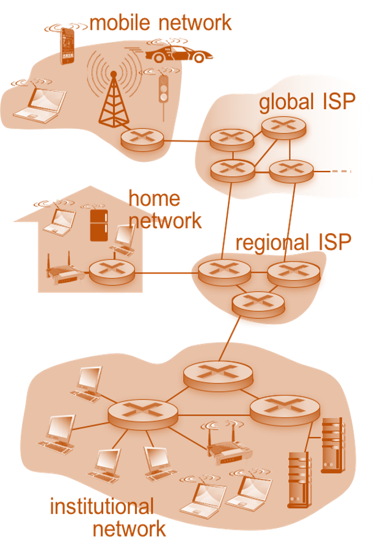
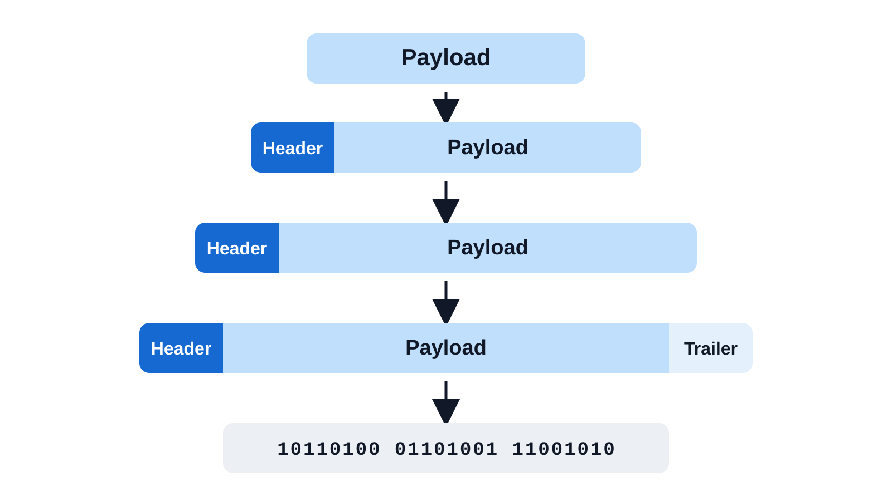
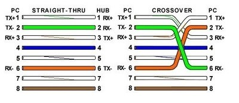
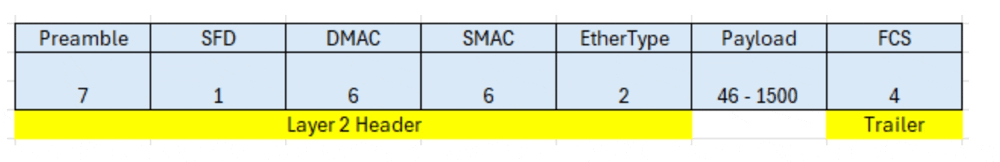
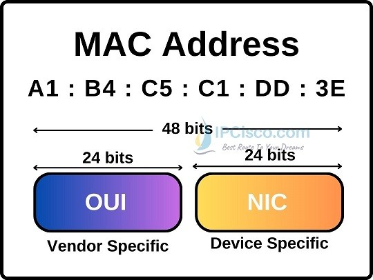
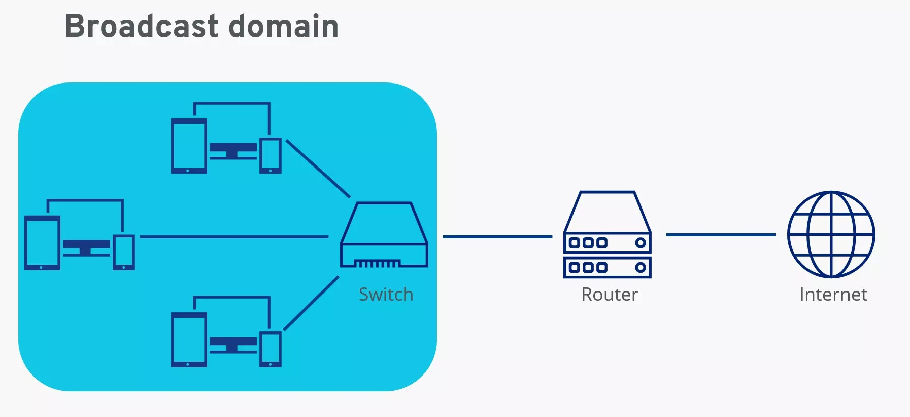
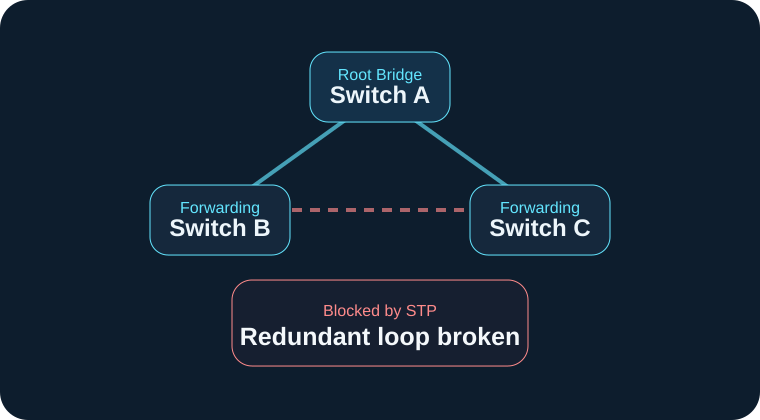
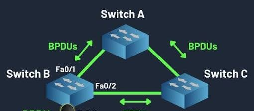
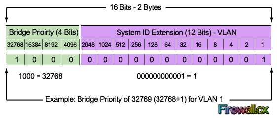
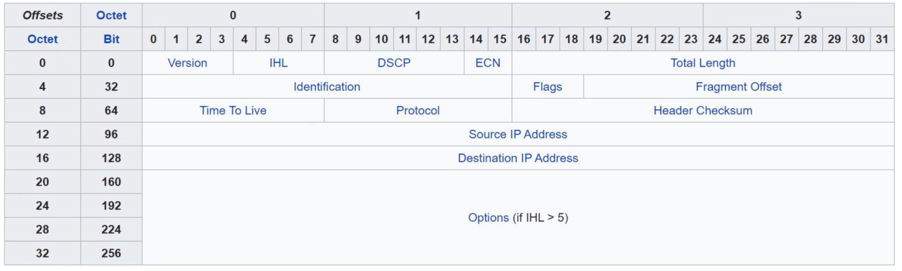

Overview
A network is a collection of devices connected together so they can communicate and share resources. It can be as small as two computers connected at home, or as large as millions of servers spread across the globe forming the Internet.

Network Types
- LAN (Local Area Network): a network within a small area — a single building, office, or home. Provides high-speed connectivity over short distances. Most LANs use Ethernet (wired) or Wi-Fi (wireless).
- MAN (Metropolitan Area Network): spans a city or large campus. Connects multiple LANs within a geographic region, often managed by a single organization or service provider.
- WAN (Wide Area Network): spans large geographic areas — cities, countries, or the entire globe. The internet is the largest WAN. Connects remote LANs together over long distances.
Network Devices
Every device in a network is called a node. Nodes include routers, switches, firewalls, servers, and clients. Servers and clients are specifically called end hosts or endpoints.
- Client: a device that accesses a service made available by a server. Examples: a laptop browsing a website, a phone checking email.
- Server: a device that provides functions or services for clients. Examples: a web server, an email server, a file server.
- Switch: has many network interfaces/ports (usually 24+) for end hosts to connect to. Provides connectivity to hosts within the same LAN (Local Area Network). Does not provide connectivity between different LANs or over the internet.
- Router: has fewer network interfaces than a switch. Used to provide connectivity between LANs and to send data over the internet.
- Firewall: monitors and control network traffic based on configured security rules. Can be placed inside or outside the network perimeter. Known as a Next-Generation Firewall (NGFW) when it includes more modern and advanced filtering capabilities.
| Firewall Types | Description |
|---|---|
| Network Firewall | A hardware device that filters traffic between networks. Sits at the boundary between a private network and the internet (or between internal network segments). |
| Host-Based Firewall | A software application that filters traffic entering and exiting a single host machine, such as a PC. Even with a network firewall in place, each host should have its own firewall as an extra line of defense. |
Bits & Bytes
- 8 bits = 1 byte. Data sizes (file sizes) are typically measured in bytes while network speeds are measured in bits per second — not bytes per second.
| Speed Units | Symbol | Value |
|---|---|---|
| Kilobit | Kb | 1,000 bits (10³) |
| Megabit | Mb | 1,000,000 bits (10⁶) |
| Gigabit | Gb | 1,000,000,000 bits (10⁹) |
| Terabit | Tb | 1,000,000,000,000 bits (10¹²) |
| Petabit | Pb | 10¹⁵ bits |
| Exabit | Eb | 10¹⁸ bits |
| Zettabit | Zb | 10²¹ bits |
| Yottabit | Yb | 10²⁴ bits |
Console Port
Network devices such as Cisco routers and switches have a console port that allows direct out-of-band access to the device — meaning you can configure it even without a network connection. This is used for initial setup, recovery, and troubleshooting.
- The cable used is called a rollover cable — the pins are reversed end-to-end: pin 1 connects to pin 8, pin 2 to pin 7, and so on.
- The rollover cable has one end with an RJ-45 connector that connects to the network device, while the other end has a DB9 (serial) connector that connects to the PC, or uses a USB-to-serial adapter on modern PCs.
- You need a terminal emulator application (such as PuTTY) on your PC to access and configure the device through the console port.
Terminal emulator settings for a Cisco console connection:
- Speed (Baud Rate): 9600
- Data Bits: 8
- Stop Bits: 1 — one stop bit is sent after every 8 data bits to mark the end of each byte.
- Parity: None
- Flow Control: None
Cisco IOS CLI
Cisco IOS (Internetwork Operating System) organizes its command-line interface into different access levels called modes. Each mode controls what commands are available and what changes can be made.
- User EXEC Mode — prompt:
Router>: the initial mode when you log in. Very limited — you can view some basic information but cannot make any configuration changes. Also called "user mode". - Privileged EXEC Mode — prompt:
Router#: entered by typingenablefrom User EXEC mode. Provides complete access to view the device configuration, restart the device, and save configurations. Cannot change the configuration directly, but can change the system clock, save config files, etc. - Global Configuration Mode — prompt:
Router(config)#: entered by typingconfigure terminalfrom Privileged EXEC mode. This is where you make configuration changes that affect the entire device.
Password Security
Cisco IOS provides several commands to protect access to the device. Passwords are case-sensitive.
- enable password <password>: sets a password required to enter Privileged EXEC mode. Stored using Cisco's proprietary Type 7 encryption — weak, easily reversible.
- enable secret <password>: sets a password for Privileged EXEC mode using MD5 hashing (Type 5) — significantly more secure than Type 7. If both
enable passwordandenable secretare configured, theenable passwordis ignored — only the secret is used. - service password-encryption: encrypts all currently configured plaintext passwords (and all future passwords) using Type 7 encryption. Does not affect the
enable secretcommand.
OSI Model
When two devices from different manufacturers need to communicate — a Cisco router with a Juniper router, a Windows PC with a Linux server — they can do so because everyone follows the same universal rules defined by the OSI (Open Systems Interconnection) model.
The OSI model divides the complex job of networking into 7 separate layers. Each layer has a specific responsibility and only communicates with the layers directly above and below it. This clean separation means manufacturers can build equipment for one layer without affecting how other layers work.
Layer 7 — Application: provides the interfaces and protocols needed by the user's software, enabling applications on different end-systems to communicate. Examples: HTTP (Hypertext Transfer Protocol), DNS (Domain Name System), FTP (File Transfer Protocol), SMTP (Simple Mail Transfer Protocol).
Layer 6 — Presentation: translates data between the application's format and a standard network format. Also handles encryption, decryption, compression, and decompression. Examples: SSL/TLS (Secure Sockets Layer / Transport Layer Security), JPEG, ASCII.
Layer 5 — Session: establishes, maintains, and terminates communication sessions between two applications. Examples: NetBIOS, RPC (Remote Procedure Call).
Layer 4 — Transport: provides end-to-end delivery of data between applications. Handles segmentation, error recovery, and flow control. Adds a header containing source and destination port numbers. Examples: TCP (Transmission Control Protocol), UDP (User Datagram Protocol).
Layer 3 — Network: handles logical addressing and routing of packets across different networks through intermediate routers. Adds a header containing source and destination IP (Internet Protocol) addresses. Examples: IPv4 (Internet Protocol version 4), IPv6, OSPF (Open Shortest Path First).
Layer 2 — Data Link: handles communication between two directly connected devices on the same local network. Creates frames by adding a header (source and destination MAC (Media Access Control) addresses) and a trailer (FCS (Frame Check Sequence) for error detection). Examples: Ethernet, Wi-Fi (802.11).
Layer 1 — Physical: converts frames into raw bits and transmits them over the physical medium — electrical signals in copper cable, light pulses in fiber optic cable, or electromagnetic waves in wireless.
Encapsulation
When data is sent, it travels down the OSI (Open Systems Interconnection) layers on the sending device, across the physical medium, then back up the layers on the receiving device. As data moves down, each layer adds its own header — and sometimes a trailer. This process is called encapsulation. The data unit at each layer has its own name called a PDU (Protocol Data Unit).

- Segment (TCP) / Datagram (UDP): the L4PDU (Layer 4 Protocol Data Unit). Application data plus a TCP (Transmission Control Protocol) or UDP (User Datagram Protocol) header containing port numbers and transport information.
- Packet: the L3PDU (Layer 3 Protocol Data Unit). The segment or datagram plus an IP header containing source and destination IP addresses.
- Frame: the L2PDU (Layer 2 Protocol Data Unit). The packet plus an Ethernet header (Media Access Control addresses) and a FCS (Frame Check Sequence) trailer for error detection.
- Bits: the L1PDU (Layer 1 Protocol Data Unit). The frame converted into raw electrical, light, or radio signals for physical transmission.
At the receiving device, the process reverses — each layer strips its own header and passes the data upward. This is called de-encapsulation.
Layer 1: Physical Layer
The Physical Layer is the foundation of all networking. It defines the physical medium that carries raw bits — electrical signals on copper wire, light pulses through fiber optic cable, or radio waves through the air. Every higher layer depends on this layer to physically move data from one place to another.
Transmission Media
The physical medium is what carries the actual signal between devices. All transmission media fall into one of two categories:
- Wired (guided) media: signals travel through a physical cable that guides the signal from source to destination. Examples: UTP (Unshielded Twisted Pair) copper cable, fiber optic cable, coaxial cable.
- Wireless (unguided) media: signals travel through the air as electromagnetic waves without any physical conductor. Examples: Wi-Fi local networks, cellular networks (4G/5G), satellite links, terrestrial microwave.
UTP Cable
UTP (Unshielded Twisted Pair) is the standard copper cable used in wired Ethernet networks. It contains 4 pairs of copper wires — 8 wires total — twisted together inside a plastic outer jacket. Twisting each pair reduces EMI (Electromagnetic Interference) that would otherwise corrupt the signal.
RJ-45 Connector
UTP cables terminate with an RJ-45 connector — the standard plastic plug used for all wired Ethernet connections. It has 8 pins, each corresponding to one of the 8 wires. How those pins are wired at each end determines the cable type.
10BASE-T & 100BASE-T
At speeds of 10 Mbps (10BASE-T) and 100 Mbps (100BASE-TX, also called Fast Ethernet), only 4 of the 8 wires carry data — one pair to transmit and one pair to receive:
Pins 1 & 2: Transmit (TX) from the PC or Router → Receive (RX) on the Switch.Pins 3 & 6: Receive (RX) on the PC or Router ← Transmit (TX) from the Switch.Straight-Through vs. Crossover Cables
- Straight-Through: pins are wired identically at both ends (1→1, 2→2, 3→3, 6→6). Used when connecting different device types — PC to Switch, Router to Switch — because TX pins on one device type align with RX pins on the other.
- Crossover: pairs are swapped at one end (1→3, 2→6, 3→1, 6→2). Used when connecting the same device types — PC to PC, Switch to Switch, Router to Router — so that TX connects to RX rather than TX to TX.

Gigabit & 10-Gigabit Ethernet
At speeds of 1 Gbps (1000BASE-T) and 10 Gbps (10GBASE-T), all 8 wires are used across all 4 pairs. Each pair operates bidirectionally — the same pair simultaneously carries signals in both directions using advanced signal processing. This bidirectionality enables the dramatically higher throughput.
| Standard | Speed | Wires Used | Bidirectional Pairs? |
|---|---|---|---|
| 10BASE-T | 10 Mbps | 4 — pins 1, 2, 3, 6 | No — dedicated TX and RX pairs |
| 100BASE-TX | 100 Mbps | 4 — pins 1, 2, 3, 6 | No — dedicated TX and RX pairs |
| 1000BASE-T | 1 Gbps | 8 — all 4 pairs | Yes — all 4 pairs bidirectional |
| 10GBASE-T | 10 Gbps | 8 — all 4 pairs | Yes — all 4 pairs bidirectional |
Fiber Optic Cables
Fiber optic cables transmit data as pulses of light through a glass core, rather than electrical signals through copper. This enables much longer distances, higher speeds, and complete immunity to electromagnetic interference — making fiber the preferred medium for inter-building links, WAN (Wide Area Network) connections, and high-security environments.
- Fiberglass core: the medium through which light pulses travel.
- Cladding: a glass layer surrounding the core with a different refractive index. This difference causes total internal reflection — light cannot escape through the cladding and stays confined to the core.
- Buffer coating: a protective plastic layer that cushions the fragile glass.
- Outer jacket: the tough outer sheath that protects the entire assembly from physical damage and the environment.
SFP Transceivers
Standard network device ports use electrical signals, so a fiber optic cable cannot be plugged directly into a regular Ethernet port. To connect a fiber cable to a switch or router, a SFP (Small Form-factor Pluggable) transceiver is required — a compact, hot-swappable module that slots into an SFP port on the device. The SFP converts the device's electrical signals into optical signals for transmission, and converts incoming light signals back into electrical signals.
Each fiber connection uses two separate strands — one for transmitting (TX) and one for receiving (RX) — making fiber connections inherently full-duplex.
Single-Mode vs. Multi-Mode Fiber
- MMF (Multi-Mode Fiber): uses a LED (Light Emitting Diode) light source and a wider core (50 or 62.5 micrometers). Light bounces along multiple paths (modes), which causes slight signal spreading (modal dispersion) that limits distance to roughly 550 meters. Cheaper than single-mode. Best suited for short distances inside buildings or data centers.
- SMF (Single-Mode Fiber): uses a laser light source and an extremely narrow core (9 micrometers). Light travels in a single straight path (mode) with virtually no dispersion, enabling distances of 100 kilometers or more. More expensive. Used for long-distance runs between buildings, campuses, and WANs (Wide Area Networks).
| Informal Name | IEEE Standard | Speed | Cable Type | Maximum Length |
|---|---|---|---|---|
| 1000BASE-LX | 802.3z | 1 Gbps | Multimode or Single-Mode | 550 m (MM) / 5 km (SM) |
| 10GBASE-SR | 802.3ae | 10 Gbps | Multimode | 400 m |
| 10GBASE-LR | 802.3ae | 10 Gbps | Single-Mode | 10 km |
| 10GBASE-ER | 802.3ae | 10 Gbps | Single-Mode | 30 km |
UTP vs. Fiber
| Factor | UTP Copper | Fiber Optic |
|---|---|---|
| Signal type | Electrical | Light (LED or laser) |
| Max distance | ~100 m per segment | ~550 m (Multi-Mode) to 100+ km (Single-Mode) |
| EMI immunity | Susceptible to EMI | Completely immune to EMI |
| Security | Signal can leak — can be tapped | No signal leakage — cannot be passively tapped |
| Cost | Lower | Higher, especially SMF (Single-Mode Fiber) |
| Connector type | RJ-45 | LC, SC, or ST — requires SFP transceiver on the device |
Network Devices
Layer 1 devices operate purely on raw signals — they have no understanding of addresses or any higher-layer information. They simply receive a signal and retransmit it.
- Hub: a basic Layer 1 device that connects multiple devices. When any device sends a signal, the hub amplifies and repeats it out of every other port with no intelligence about the intended destination. All devices share the same physical medium. Hubs are legacy technology replaced by switches.
- Repeater: receives a signal, amplifies it to restore signal strength lost over distance, and retransmits it. Used to extend the maximum cable length of a network segment.
- Runt: a frame smaller than the 64-byte minimum. Typically caused by a collision or a malfunctioning NIC. To prevent runts, the sender pads the payload with zeros if the actual data is shorter than 46 bytes, ensuring the frame always meets the minimum size.
- Giant: a frame larger than the 1518-byte maximum. Usually caused by a misconfigured device. To prevent oversized data from being sent, Layer 3 uses fragmentation — breaking large packets into smaller pieces that each fit within the 1500-byte payload limit before they are encapsulated into frames.
- Half-Duplex: sending and receiving cannot happen simultaneously.
- Full-Duplex: sending and receiving can happen simultaneously.
Layer 2: Data Link Layer
Layer 2 organizes raw bits into structured units called frames. Each Ethernet frame has a header, a payload, and a trailer. The header contains addressing information — source and destination MAC (Media Access Control) addresses — that identifies where the frame came from and where it needs to go. The payload carries the actual data from the layer above. The trailer contains an error-check value that lets the receiver verify the frame arrived intact. Layer 2 only handles delivery between devices on the same local network — delivering data across different networks is the job of Layer 3. Ethernet is the dominant Layer 2 protocol in wired local area networks, and every Ethernet frame follows the structure below.

| Field | Size | Purpose |
|---|---|---|
| Preamble | 7 bytes | Alternating 1s and 0s (10101010 repeated). Allows receiving devices to synchronize their clock to the incoming bit stream before the actual frame begins. |
| Start Frame Delimiter (SFD) | 1 byte | The bit pattern 10101011. Signals the end of the preamble — the very next byte is the start of the Destination MAC Address field. |
| Destination MAC Address | 6 bytes | MAC address of the intended recipient. Can be unicast (one device), multicast (a group), or broadcast (FF:FF:FF:FF:FF:FF — all devices on the local network). |
| Source MAC Address | 6 bytes | MAC address of the sending device's network interface card (NIC). |
| Type / Length | 2 bytes | Value 1536 (0x0600) or higher: identifies the Layer 3 protocol — 0x0800 = IPv4, 0x86DD = IPv6. Value below 1536: indicates the byte length of the payload. |
| Payload (Data) | 46–1500 bytes | The encapsulated Layer 3 data — usually an IP packet. Minimum 46 bytes — if the actual data is shorter, padding bytes (zeros) are appended to reach the minimum. This ensures the total frame meets the 64-byte minimum required for correct collision detection. |
| FCS (Frame Check Sequence) | 4 bytes | A Cyclic Redundancy Check (CRC) value — a mathematical checksum computed from all the data in the frame. The sender runs a CRC algorithm over the frame contents and places the result here. The receiver performs the same calculation on the received data and compares results. If they do not match, the frame was corrupted in transit and is silently discarded (no retransmission at this layer — reliability is handled by Layer 4). |
Frame Errors
Frame errors occur when a received frame does not meet the size constraints defined by the Ethernet standard.
Switches
A switch is an intelligent Layer 2 device. Because it operates at the Data Link layer, it can read the source and destination MAC addresses inside Ethernet frames and forward each frame only through the port that leads toward the intended destination.
Unlike a hub, which repeats signals to all connected devices over a shared half-duplex medium, a switch normally uses full-duplex links. This allows devices on switch ports to send and receive at the same time without competing for the same shared medium.
To manually configure the duplex mode on an interface:
int interface-id
duplex {auto | full | half}
This difference in duplex operation also affects how collisions are handled. Because all devices connected to a hub share one half-duplex collision domain, simultaneous transmissions can collide. CSMA/CD (Carrier Sense Multiple Access with Collision Detection) is used to manage access to this shared medium:
- Carrier Sense: before sending, the device listens to the shared medium. If it is busy, the device waits; if it is free, the device starts transmitting.
- Multiple Access: all devices connected to the shared medium have equal access to it and may attempt to transmit when it is available.
- Collision Detection: while transmitting, the device continues monitoring the medium. If a collision is detected, the devices stop transmitting, send a jam signal, wait for a random back-off time, and then try again.
MAC Addresses
At Layer 2, devices are identified using MAC (Media Access Control) addresses. A MAC address, also called physical address, is assigned to a network interface card (NIC) and is used by switches to identify the source and destination of Ethernet frames on the local network.
- Length: 48 bits (6 bytes), usually written as 12 hexadecimal characters, for example AA:BB:CC:11:22:33.
- Uniqueness: MAC addresses are designed to uniquely identify individual network interfaces.
- Burned-In Address (BIA): the hardware MAC address assigned by the manufacturer. It can be overridden or spoofed by software, but the original hardware address remains unchanged.
A MAC address is divided into two main portions:

| Portion | Bytes | Name | Purpose |
|---|---|---|---|
| First half (6 hex characters) | Bytes 1–3 | Organizationally Unique Identifier (OUI) | Identifies the organization or manufacturer that was assigned that OUI. |
| Second half (6 hex characters) | Bytes 4–6 | Device Identifier | Identifies the individual network interface within that OUI range. |
Because a switch forwards Ethernet frames using MAC addresses, it keeps a MAC address table, also called a CAM (Content Addressable Memory) table. This table maps learned MAC addresses to the switch ports where they were last seen and is built automatically as frames enter the switch.
- Learn: when a frame arrives, the switch reads the source MAC address and records it together with the incoming port.
- Forward: the switch checks the destination MAC address in its table. If the address is known, the frame is forwarded only through the associated port. If it is unknown, the frame is flooded out all other ports in the same VLAN except the port it arrived on.
- Aging: dynamically learned MAC entries are removed after they remain inactive for the aging period, which is typically 300 seconds (5 minutes) by default. If traffic for that destination appears again after the entry is removed, the switch must relearn it.
To view the MAC address table or clear dynamically learned entries, either all at once, for a specific MAC address, or on a specific interface:
show mac address-table
clear mac address-table dynamic [address mac-addr | interface interface-id]Broadcast Domain
A set of all devices that receive a broadcast frame (destination MAC FF:FF:FF:FF:FF:FF) sent by any one member. By default, all ports on a switch are in the same broadcast domain.

VLANs
A VLAN (Virtual Local Area Network) logically separates end hosts at Layer 2, creating multiple isolated broadcast domains within the same physical switch. Devices in different VLANs cannot communicate directly at Layer 2; traffic between VLANs must be routed by a Layer 3 device.
VLAN IDs identify these logical networks and are divided into several ranges:
| Range | Category | Notes |
|---|---|---|
| 1 | Default VLAN | All switch interfaces belong to VLAN 1 by default. Cannot be deleted. |
| 2–1001 | Normal VLANs | Standard range. Supported on all VTP (VLAN Trunking Protocol) versions. |
| 1002–1005 | Reserved VLANs | Reserved for legacy technology. Cannot be modified or deleted. |
| 1006–4094 | Extended VLANs | Modern switches support these. Not supported by VTPv1 or VTPv2. |
| 0 and 4095 | Reserved | Reserved by the IEEE 802.1Q standard. Cannot be used. |
To create a VLAN and optionally assign it a descriptive name:
vlan vlan-id → create and enter VLAN configuration mode
name vlan-name → assign a descriptive name to the VLANAfter a VLAN is created, switch ports can be assigned to it. Ports that connect end hosts such as PCs, printers, and servers are normally configured as access ports. An access port belongs to one VLAN, and frames sent to or received from the end host are untagged, so the end host does not need to know that VLANs are being used.
To configure one or more interfaces as access ports and assign them to a VLAN:
int range interfaces-ids → select multiple interfaces at once
switchport mode access → configure as an access port
switchport access vlan vlan-id → assign the access port to the VLAN
show vlan brief → view VLANs and assigned access portsAccess ports are sufficient when devices in a VLAN are connected to the same switch. However, when the same VLAN must extend across multiple switches, traffic for several VLANs may need to share a single physical link. This is done using a trunk port.
A trunk carries traffic for multiple VLANs simultaneously. To keep the traffic separated, IEEE 802.1Q (dot1q) adds a VLAN tag to Ethernet frames so the receiving switch can identify which VLAN each frame belongs to. IEEE 802.1Q is the industry-standard tagging method and replaced the older Cisco-proprietary ISL (Inter-Switch Link).

When a frame is sent across a trunk, 802.1Q inserts a 4-byte tag between the Source MAC Address and the Type/Length field of the Ethernet frame. The receiving switch reads this tag to identify the VLAN before forwarding the frame toward its destination.
| Field | Size | Purpose |
|---|---|---|
| TPID (Tag Protocol Identifier) | 16 bits | Always 0x8100 — identifies the frame as 802.1Q tagged. |
| PCP (Priority Code Point) | 3 bits | Class of Service (CoS) — used for Quality of Service (QoS) to prioritize delay-sensitive traffic such as voice. |
| DEI (Drop Eligible Indicator) | 1 bit | If set to 1, the frame may be dropped first during network congestion. |
| VID (VLAN Identifier) | 12 bits | Identifies the VLAN the frame belongs to. 12 bits provide 4,096 possible values from 0–4,095. |
One VLAN on an 802.1Q trunk is treated differently: the native VLAN. Frames belonging to the native VLAN are normally sent across the trunk without an 802.1Q tag. If an untagged frame arrives on a trunk port, the switch associates it with the native VLAN.
- Default native VLAN: VLAN 1.
- Security best practice: change the native VLAN to an unused VLAN to help prevent VLAN hopping attacks.
- Must match: both ends of the trunk should use the same native VLAN to avoid VLAN mismatches.
To configure an interface as a trunk and control which VLANs it carries:
int interface-id → select the interface
switchport trunk encapsulation dot1q → set encapsulation to 802.1Q
switchport mode trunk → configure as a trunk
switchport trunk allowed vlan vlan-list → allow only specified VLANs
switchport trunk native vlan vlan-id → change the native VLAN
show interfaces trunk → view trunk configurationsDynamic Trunking Protocol
DTP (Dynamic Trunking Protocol) is a Cisco-proprietary protocol that allows Cisco switches to automatically negotiate whether a link should operate as an access link or a trunk link instead of requiring both sides to be configured manually.
The result of this negotiation depends on the switchport mode configured on each side of the link:
| Mode | Behavior | Forms Trunk With |
|---|---|---|
| trunk | Always operates as a trunk and actively sends DTP frames. | All modes except access. |
| dynamic desirable | Actively attempts to negotiate a trunk. | trunk, dynamic desirable, or dynamic auto. |
| dynamic auto | Passively waits for the other side to initiate trunking. | trunk or dynamic desirable. |
| access | Always operates as an access port and does not form a trunk. | Never forms a trunk. |
To manually configure how an interface participates in DTP negotiation:
int interface-id
switchport mode {trunk | dynamic {auto | desirable} | access}- Older Cisco switches commonly use dynamic desirable by default, actively attempting to form trunks.
- Newer Cisco switches commonly use dynamic auto by default, waiting for the connected switch to initiate trunking.
- DTP works only between Cisco switches. Devices that do not support DTP cannot participate in this negotiation.
On switches that support both IEEE 802.1Q and ISL (Inter-Switch Link), DTP can also negotiate which trunk encapsulation method will be used. When the encapsulation mode is set to negotiate by default, the connected switches compare their supported methods and select the trunking encapsulation automatically.
To manually configure trunk encapsulation on an interface:
int interface-id
switchport trunk encapsulation {dot1q | isl | negotiate}When both switches support ISL and the encapsulation is left as negotiate, ISL is preferred; otherwise IEEE 802.1Q is used when supported.
VLAN Trunking Protocol
VTP (VLAN Trunking Protocol) is a Cisco-proprietary protocol that distributes VLAN configuration from a central VTP server switch to all VTP client switches in the same domain — eliminating the need to configure VLANs individually on every switch.
| VTP Mode | Add/Modify/Delete VLANs? | Stores VLAN DB in NVRAM? | Syncs to Server? | Forwards VTP Advertisements? |
|---|---|---|---|---|
| Server | Yes | Yes | Yes (if another server has a higher revision number) | Yes |
| Client | No | No (VTPv3: Yes) | Yes — syncs to highest revision number seen | Yes |
| Transparent | Yes — local only, not advertised | Yes | No — ignores VTP advertisements | Yes — forwards others' advertisements |
- Revision number: VTP servers increment this counter every time a VLAN is added, modified, or deleted. Clients always sync to the highest revision number. To safely reset it to zero: change the VTP domain name or switch the device to transparent mode.
- VTP domain: all participating switches must use the same domain name
vtp domain DOMAIN-NAME - Auto-join risk: a switch with no VTP domain (NULL) that receives a VTP advertisement automatically adopts that domain and revision number — a potential security risk.
- VTP versions: VTPv1 and VTPv2 support only normal VLANs (1–1,005). VTPv3 adds support for extended VLANs (1,006–4,094). VTPv2 adds Token Ring VLAN support over VTPv1 but is otherwise nearly identical.
Spanning Tree Protocol
Network redundancy is important because it keeps traffic flowing if a switch or link fails. However, adding redundant Layer 2 links can create switching loops, where Ethernet frames circulate repeatedly between switches.
Unlike Layer 3 IP packets, Ethernet frames do not have a TTL (Time to Live) field, so there is nothing to automatically stop a frame from travelling around a loop.
These loops can cause serious network problems:
- Broadcast Storm: a broadcast frame (destination FF:FF:FF:FF:FF:FF) is repeatedly forwarded around the loop, creating more and more copies until they consume most of the available bandwidth and can make the network unusable.
- MAC Address Flapping: the same source MAC address is learned on different switch ports repeatedly, causing the MAC address table to constantly change and making frame forwarding unstable.
STP (Spanning Tree Protocol) prevents these problems by detecting redundant Layer 2 paths and placing selected paths into a blocking state. This creates a loop-free topology while keeping the redundant links available as backup paths if the active path fails.

STP has evolved into several versions that differ in convergence speed, VLAN support, and load-balancing capabilities:
| Version | Standard | Load Balance? | Description |
|---|---|---|---|
| Classic STP | IEEE 802.1D | No | The original STP. All VLANs share one STP instance. |
| PVST | Cisco proprietary | Yes | Per-VLAN Spanning Tree. One STP instance per VLAN. Supports ISL trunking only. |
| PVST+ | Cisco proprietary | Yes | Per-VLAN Spanning Tree Plus. One STP instance per VLAN. Supports IEEE 802.1Q trunking. |
| Rapid STP (RSTP) | IEEE 802.1w | No | Much faster convergence than 802.1D. All VLANs share one STP instance. |
| Rapid PVST+ | Cisco proprietary | Yes | Cisco's upgrade to 802.1w. One STP instance per VLAN. Supports IEEE 802.1Q. |
| MSTP | IEEE 802.1s | Yes | Multiple Spanning Tree Protocol. Uses RSTP mechanics. Groups multiple VLANs into instances (e.g. VLANs 1–5 in instance 1, VLANs 6–10 in instance 2) to load balance. |
Cisco switches support different STP modes. When configuring the mode, the keyword pvst refers to PVST+, while rapid-pvst enables Rapid PVST+. To change the STP mode:
spanning-tree mode {stp | rstp | mst | pvst | rapid-pvst}Classic STP
Classic STP, defined in IEEE 802.1D, prevents Layer 2 loops by allowing switches to identify redundant paths and block selected ports while keeping them available as backup paths.

To make these decisions, switches need to exchange information about the STP topology. They do this using BPDUs (Bridge Protocol Data Units). BPDUs are special STP messages that switches use to share information about themselves and the paths they know about. By comparing the information carried in these BPDUs, the switches can agree on one loop-free topology.
However, all switches need the same reference point when comparing their available paths. STP therefore selects one switch to become the Root Bridge. The Root Bridge acts as the central reference for the entire STP topology, and all other switches calculate their best path toward it.
When STP first starts, every switch initially assumes that it is the Root Bridge and sends BPDUs advertising itself. To elect the Root Bridge, the switches compare their Bridge IDs (Bridge Identifiers). The switch with the lowest Bridge ID wins the election and becomes the Root Bridge.
The Bridge ID is determined mainly by two values:
- Bridge Priority: compared first. The default value is 32,768. The switch with the lower Bridge Priority is preferred.
- MAC Address: used as the tiebreaker when two switches have the same Bridge Priority. The switch with the numerically lower MAC address wins.
In Cisco's PVST+ implementation, the Bridge ID also contains an Extended System ID, which represents the VLAN ID. The original 16-bit priority field is divided into a 4-bit configurable Bridge Priority and a 12-bit Extended System ID. For example, with the default priority of 32,768 in VLAN 1, the value represented in the Bridge ID becomes 32,768 + 1 = 32,769. Because part of this field is reserved for the Extended System ID, the configurable Bridge Priority changes in increments of 4,096: 0, 4096, 8192, 12288,....

The Bridge Priority can also be changed manually to influence which switch becomes the Root Bridge:
spanning-tree vlan vlan-id [priority priority | root {primary | secondary}]A lower Bridge Priority makes the switch more likely to become the Root Bridge. Cisco also provides shortcuts for selecting a primary and secondary Root Bridge:
- root primary: adjusts the Bridge Priority to make the switch the preferred Root Bridge.
- root secondary: configures the switch as a preferred backup Root Bridge if the primary Root Bridge fails.
Once the Root Bridge is established, it becomes the only switch that originates Hello BPDUs every 2 seconds by default, while the other switches receive and forward them through the topology. STP then assigns a role to every port. Classic STP uses three main port roles:
- Root Port (RP): the port on a non-root switch that provides the best path toward the Root Bridge. Every non-root switch has exactly one Root Port. During normal STP operation, it receives BPDUs from the Designated Port on the other end of the link.
- Designated Port (DP): the port selected to forward traffic on a network link. Every link has exactly one Designated Port. Designated Ports send or forward BPDUs onto their links.
- Non-Designated Port: a redundant port that is placed in the blocking state to prevent a Layer 2 loop. It receives BPDUs but does not forward regular traffic or forward BPDUs.
STP assigns these roles in a specific order. First, all ports on the Root Bridge become Designated Ports. The Root Bridge does not have a Root Port because it is already the reference point that all other switches are trying to reach.
Next, every non-root switch must select exactly one Root Port — the port that provides its best path toward the Root Bridge. If a switch has multiple possible paths, STP selects the Root Port using these tiebreakers in order:
- Lowest Root Path Cost
- Lowest Neighbor Bridge ID
- Lowest Neighbor Port ID
The first value compared is the Root Path Cost. The Root Bridge starts by advertising a Root Path Cost of 0. Each switch that receives a superior BPDU adds the STP cost of the receiving link to the advertised cost, building the total cost back toward the Root Bridge. The path with the lowest total Root Path Cost is preferred.
| Link Speed | STP Cost |
|---|---|
| 10 Mbps | 100 |
| 100 Mbps | 19 |
| 1 Gbps | 4 |
| 10 Gbps | 2 |
The cost of a specific interface can also be changed manually to influence which path STP prefers:
spanning-tree vlan vlan-id cost costIf multiple possible Root Ports have the same Root Path Cost, STP compares the Bridge IDs of the neighboring switches. The port connected to the neighbor with the lowest Bridge ID is preferred.
If the remaining candidate ports are connected to the same neighboring switch, their Neighbor Bridge ID is also equal, so STP compares the Neighbor Port IDs. The port connected to the neighbor's lowest Port ID is preferred.
The Port ID is formed from the Port Priority and the Port Number. The default Port Priority is 128, while the Port Number identifies the specific interface on the neighboring switch, such as G0/1 or G0/2. If the Port Priority is also equal, the port connected to the neighbor's lower Port Number — and therefore lower Port ID — is preferred.
The Port Priority can be changed on the upstream interface to influence this final tiebreaker:
spanning-tree vlan vlan-id port-priority priorityOnce every non-root switch has selected its Root Port, STP must determine which port should forward traffic on every network segment. This port is called the Designated Port. Every network segment has exactly one Designated Port. On the Root Bridge, all ports are automatically Designated Ports.
On a link between two non-root switches, STP selects the Designated Port using the following order:
- Lowest Root Path Cost
- Lowest Bridge ID
The switch with the better path toward the Root Bridge makes its port the Designated Port.
After the Root Ports and Designated Ports have been selected, any remaining port becomes a Non-Designated Port. This is the redundant port that STP prevents from forwarding regular traffic so that a Layer 2 loop cannot form.
A port's role describes its purpose in the STP topology, while its state determines what the port is currently allowed to do. Classic STP uses five port states:
| State | Type | Sends/ Receives Traffic? | Sends/ Receives BPDUs? | Learning MAC Address | Description |
|---|---|---|---|---|---|
| Blocking | Stable | No | Receives only | No | Blocks regular traffic indefinitely to prevent loops and remains in this state until the topology changes. |
| Listening | Transitional | No | Yes | No | Processes BPDUs for 15 seconds to determine whether the port can safely move toward Forwarding. |
| Learning | Transitional | No | Yes | Yes | Learns MAC addresses for 15 seconds while still preventing regular traffic from being forwarded. |
| Forwarding | Stable | Yes | Yes | Yes | Operates normally by forwarding traffic and learning MAC addresses until the topology changes. |
| Disabled | Stable | No | No | No | Remains inactive while the port is administratively shut down and does not participate in STP. |
When a blocked port needs to become active, it normally transitions through Blocking → Listening → Learning → Forwarding. Listening and Learning each last 15 seconds, giving a 30-second Forward Delay.
To view the STP configurations:
show spanning-tree [summary | {int <interface-id>} | {vlan <vlan-id>} | detail]STP Toolkit
The STP Toolkit includes several features that improve the speed, security, and stability of Spanning Tree Protocol. These features are used on different types of ports depending on what the network needs to protect.
1. PortFast
PortFast allows an STP edge port to skip the normal Listening and Learning states and move immediately to the Forwarding state when the port becomes active. It is normally used on ports connected to end devices, where waiting for the normal STP convergence process is unnecessary.
To configure PortFast on a specific interface:
int interface-id
spanning-tree portfast [disable | trunk]To enable PortFast globally on all access ports:
spanning-tree portfast default2. BPDU Guard
BPDU Guard protects edge ports from accidentally being connected to another Layer 2 device. Since an edge port is normally connected to an end host, it is not expected to receive STP BPDUs.
To enable or disable BPDU Guard on a specific interface:
int interface-id
spanning-tree bpduguard {enable | disable}To enable BPDU Guard globally on all PortFast-enabled ports:
spanning-tree portfast bpduguard default3. ErrDisable and ErrDisable Recovery
If a BPDU Guard-enabled port receives a BPDU, the switch places the port into the ErrDisable state to protect the Layer 2 topology. A port placed in ErrDisable stops forwarding traffic until the problem is corrected.
There are two ways to return the port to normal operation:
- Manual recovery: fix the problem, then use
shutdownfollowed byno shutdownon the affected interface. - Automatic recovery: configure the switch to automatically re-enable the port after the recovery timer expires.
To configure and verify automatic recovery from BPDU Guard violations:
errdisable recovery cause bpduguard → enable automatic recovery for BPDU Guard
errdisable recovery interval seconds → set the recovery timer
show errdisable recovery → view recovery settings and timers4. BPDU Filter
BPDU Filter controls whether STP BPDUs are sent and processed on an edge port. It is used when the port should not normally participate in STP communication.
To enable or disable BPDU Filter directly on a specific interface:
int interface-id
spanning-tree bpdufilter {enable | disable}When BPDU Filter is enabled directly on an interface, the port stops sending and processing BPDUs. This can be dangerous because STP may no longer detect a Layer 2 loop on that port.
To enable BPDU Filter globally on PortFast-enabled ports:
spanning-tree portfast bpdufilter defaultWith the global method, a PortFast port initially filters BPDUs. If a BPDU is received, the port stops behaving as a PortFast/BPDU-filtered edge port and participates normally in STP, allowing STP to protect the network.
5. Root Guard
Root Guard protects the intended Root Bridge by preventing another switch connected through a protected port from becoming the Root Bridge. A Root Guard-enabled port can receive normal BPDUs, but it must not receive a superior BPDU. A superior BPDU advertises better STP information and could cause the neighboring switch to become the Root Bridge.
To enable Root Guard on a specific interface:
int interface-id
spanning-tree guard rootIf a Root Guard-enabled port receives a superior BPDU, the switch places the port into the Root-Inconsistent state. The port stops forwarding traffic but continues listening for BPDUs.
When the superior BPDUs stop arriving and the Max Age (20 seconds by default) expires, the port automatically leaves the Root-Inconsistent state and returns to normal STP operation.
6. Loop Guard
Loop Guard protects against situations where a switch stops receiving BPDUs on a port that should normally receive them. One possible cause is a unidirectional link failure, where traffic can travel in only one direction between two switches. This is more common with fiber links because transmit (TX) and receive (RX) use separate strands. Without Loop Guard, if one fiber strand fails to recieve the BPDUS, a blocked port could incorrectly assume the path is safe and move to the Forwarding state, creating a Layer 2 loop. With Loop Guard enabled, the port is placed into the Loop-Inconsistent state instead and remains blocked until BPDUs are received again.
To enable Loop Guard on a specific interface:
int interface-id
spanning-tree guard loopTo enable Loop Guard globally:
spanning-tree loopguard defaultIf a Loop Guard-enabled port stops receiving the BPDUs it expects, the switch places the port into the Loop-Inconsistent state instead of allowing it to begin forwarding traffic.
When valid BPDUs are received again, the port automatically leaves the Loop-Inconsistent state and returns to normal STP operation.
Root Guard vs. Loop Guard
Root Guard and Loop Guard are mutually exclusive — they cannot both be enabled on the same port. Their purposes are opposite:
- Root Guard: applied to Designated Ports — prevents them from becoming Root Ports by blocking superior BPDUs.
- Loop Guard: applied to Root and Non-Designated Ports — prevents them from becoming Designated Ports when BPDUs stop arriving.
Rapid Spanning Tree Protocol
RSTP (Rapid Spanning Tree Protocol), standardized as IEEE 802.1w and implemented by Cisco as Rapid PVST+, improves Classic STP by allowing the network to react to topology changes much faster. Classic STP may take up to 50 seconds to converge, while RSTP can normally react within a few seconds.
One of the main reasons for this faster convergence is how BPDUs are handled. In Classic STP, the Root Bridge originates the BPDU information and the other switches propagate it through the topology. In RSTP, every switch generates and sends its own BPDUs from its Designated Ports every 2 seconds by default, allowing neighboring switches to detect changes directly.
RSTP also detects lost neighbors faster. Instead of waiting for the 20-second Max Age timer used by Classic STP, a switch considers a neighbor lost after missing three consecutive BPDUs, which normally takes about 6 seconds.
RSTP uses the same Root Bridge election and path-selection rules as Classic STP. However, larger path-cost values can be used to better distinguish between modern high-speed links:
| Link Speed | Classic STP Cost | RSTP Cost |
|---|---|---|
| 10 Mbps | 100 | 2,000,000 |
| 100 Mbps | 19 | 200,000 |
| 1 Gbps | 4 | 20,000 |
| 10 Gbps | 2 | 2,000 |
| 100 Gbps | — | 200 |
| 1 Tbps | — | 20 |
The Root Port and Designated Port roles remain the same as in Classic STP, while the Non-Designated role is replaced by two more specific roles:
- Alternate Port: a Discarding port that provides an alternative path toward the Root Bridge. If the current Root Port fails, the Alternate Port can rapidly replace it.
- Backup Port: a Discarding port that provides a backup to another port on the same switch connected to the same shared segment. This is mainly associated with hub-based networks and is rarely seen in modern switched networks. The interface with the lowest Port ID becomes the Designated Port; the other becomes the Backup Port.
RSTP also simplifies the five Classic STP port states into only three. Disabled, Blocking, and Listening are represented by the Discarding state, while Learning and Forwarding remain:
| RSTP State | Classic STP Equivalent | Forwards Traffic? | Learns MAC Addresses? | Behavior |
|---|---|---|---|---|
| Discarding | Disabled / Blocking / Listening | No | No | Does not forward regular traffic and prevents the port from creating a loop. |
| Learning | Learning | No | Yes | Learns MAC addresses while preparing to begin forwarding traffic. |
| Forwarding | Forwarding | Yes | Yes | Forwards regular traffic and operates normally in the active topology. |
Unlike Classic STP, RSTP does not always depend on fixed Listening and Learning delays before allowing a port to Forward. It can use direct communication between neighboring switches to determine whether a link can safely become active. How quickly this happens depends partly on the type of link connected to the port.
RSTP recognizes three main link types:
- Edge: a port connected directly to an end host. It can move immediately to Forwarding because another switch is not expected on the link. This provides the same function as PortFast.
- Point-to-Point: a direct full-duplex connection between two switches. RSTP can use a rapid proposal-and-agreement process between the switches to safely move ports toward Forwarding.
- Shared: a half-duplex connection to a shared medium such as a hub. Rapid negotiation cannot be used, so the port relies on the slower timer-based STP process.
The link type is normally determined from the interface operation, but point-to-point or shared behavior can also be configured manually:
int interface-id
spanning-tree link-type {point-to-point | shared}EtherChannel
When multiple physical links connect two switches, STP treats each link separately and may block redundant links to prevent Layer 2 loops. EtherChannel, also called Port-Channel or LAG (Link Aggregation Group), solves this by combining multiple physical interfaces into one logical interface. STP sees the entire bundle as a single link, allowing the physical member links to remain available for traffic while still preventing loops.
In a typical campus network, switches commonly have two roles:
- Access Layer Switch: connects directly to end devices.
- Distribution Layer Switch: connects multiple Access Layer switches and carries their traffic toward the rest of the network.
The links between the Access and Distribution layers are called uplinks. If the combined traffic from the access ports becomes greater than the available uplink bandwidth, this congestion is called oversubscription. EtherChannel helps reduce this problem by combining multiple uplinks into one higher-capacity logical connection.
Although the links are bundled together, a single traffic flow is not divided frame-by-frame across them. EtherChannel uses a load-balancing algorithm to choose one physical member for each flow, and frames belonging to that flow continue using the same member link. This keeps frames in order while allowing different flows to use different links in the bundle. The member link is selected using one of the load-balancing methods:
- src-mac: source MAC address.
- dst-mac: destination MAC address.
- src-dst-mac: source and destination MAC addresses (default on many switches).
- src-ip: source IP address.
- dst-ip: destination IP address.
- src-dst-ip: source and destination IP addresses.
To configure the load-balancing method or view the method currently being used:
port-channel load-balance {src-mac|dst-mac|src-dst-mac|src-ip|dst-ip|src-dst-ip}
show etherchannel load-balanceThe physical links can be grouped into an EtherChannel using one of three methods:
| Method | Type | Modes | How It Forms |
|---|---|---|---|
| PAgP (Port Aggregation Protocol) | Cisco proprietary | desirable / auto | Desirable actively negotiates, while auto waits passively. At least one side must use desirable. |
| LACP (Link Aggregation Control Protocol) | Industry standard | active / passive | Active initiates negotiation, while passive waits. At least one side must use active. |
| Static EtherChannel | No negotiation protocol | on | Both sides must be manually configured with on mode. |
The configuration process is similar for all three methods; the main difference is the channel mode used:
int range interfaces-ids
channel-protocol {lacp | pagp} → optionally specify LACP or PAgP
channel-group channel-group-number mode {active | passive | desirable | auto | on}Because all member interfaces operate together as one logical link, their configurations must be compatible. A mismatched interface may be prevented from joining the EtherChannel.
- Same speed.
- Same duplex mode.
- Same switchport mode — all access or all trunk.
- For access links, the same access VLAN.
- For trunk links, the same native VLAN and allowed VLAN configuration.
After the EtherChannel forms, the switch creates a logical Port-Channel interface representing all of its physical members. To verify the bundle, its members, and their status:
show etherchannel {summary | port-channel | detail}Layer 3: The Network Layer
Layer 2 delivers frames between devices on the same local network. Layer 3 makes communication possible between devices on completely different networks — anywhere in the world. It introduces IP addresses, routers, and the logic needed to find the best path from any source to any destination.
Routers
A router is the primary Layer 3 device. Its job is to receive packets, examine the destination IP address, and forward each packet out the correct interface toward its destination — hop by hop across the network. Routers connect different networks to each other, enabling global communication that Layer 2 switches cannot provide.
Layer 3 has three core responsibilities, all performed by routers:
- Logical Addressing: IP addresses uniquely identify every device across any network in the world — unlike MAC addresses, which are only meaningful within a single local network. IP addresses stay the same end-to-end from source to destination, while MAC addresses change at every single hop.
- Routing: routers examine the destination IP address of each packet and forward it along the best available path across the network.
- Encapsulation: at each hop, the router strips the incoming Layer 2 frame (L2PDU), reads the Layer 3 IP address, makes a routing decision, then re-encapsulates the packet (L3PDU) in a brand new Layer 2 frame for the next link. The IP header — added at Layer 3 and containing source and destination IP addresses — is what the router uses to make these decisions.
- Network portion: identifies which network the device belongs to. All devices on the same network share an identical network portion.
- Host portion: identifies the specific device within that network. Must be unique within the network.
- Network Address (host portion all zeros — e.g., 192.168.1.0/24): represents the network itself. Used in routing tables to refer to the entire subnet. Cannot be assigned to a host.
- Broadcast Address (host portion all ones — e.g., 192.168.1.255/24): a packet sent here is delivered to every host in the subnet. Cannot be assigned to a host.
- Loopback Range (127.0.0.0–127.255.255.255): reserved for testing the local device's own TCP/IP stack. Traffic never leaves the device. The most commonly used loopback address is 127.0.0.1.
- FLSM (Fixed-Length Subnet Masks): all subnets use the same prefix length and therefore the same number of host addresses. Simple to design but inefficient when subnets have very different size requirements.
- VLSM (Variable-Length Subnet Masks): different subnets use different prefix lengths, allowing each subnet to be exactly sized for its actual needs. A subnet for 100 hosts uses /25 (126 usable hosts); a point-to-point link uses /30 (2 usable hosts). VLSM (Variable-Length Subnet Masks) is the standard approach in modern network design.
- Static ARP entry: manually configured, permanent — does not expire. Used for security-sensitive or critical devices.
- Dynamic ARP entry: learned automatically via ARP. Expires after inactivity.
IPv4 Addressing
IPv4 (Internet Protocol version 4) is the most widely used Layer 3 protocol. An IPv4 address is a 32-bit number written in dotted-decimal notation — four groups of 8 bits (called octets) separated by dots.
Example: the address 192.168.1.100 in binary is 11000000 . 10101000 . 00000001 . 01100100
Network Portion and Host Portion
A subnet mask divides an IPv4 address into two parts:
Example: 192.168.1.100 with mask /24 (255.255.255.0) — network portion: 192.168.1, host portion: .100.
Special IPv4 Addresses
Classless Inter-Domain Routing
CIDR (Classless Inter-Domain Routing) replaced the older classful networking system to prevent the rapid exhaustion of IPv4 addresses. The classful system assigned addresses in rigid fixed sizes:
| Class | First Octet Range | Default Mask | Network Size |
|---|---|---|---|
| A | 1–126 | /8 (255.0.0.0) | 16,777,214 hosts — far too large for most organizations |
| B | 128–191 | /16 (255.255.0.0) | 65,534 hosts — still too large for most |
| C | 192–223 | /24 (255.255.255.0) | 254 hosts — often too small |
The problem: a company needing 2,000 host addresses would receive an entire Class B network (65,534 hosts) — wasting over 63,000 addresses. CIDR (Classless Inter-Domain Routing) allows any prefix length. That same company could receive a /21 network (2,046 usable hosts) — a far more efficient allocation. CIDR is now universal in all modern networking.
Fixed-Length and Variable-Length
| Approach | Subnets Created | Hosts per Subnet | Address Waste |
|---|---|---|---|
| Fixed-Length (/26) | 4 equal subnets | 62 usable hosts each | High — if some subnets only need 10 hosts, 52 addresses per subnet are wasted |
| Variable-Length (mixed) | Subnets of varying sizes | Each sized to actual need (e.g., /28 = 14 hosts, /30 = 2 hosts) | Minimal |
IPv4 Packet Header
When a Layer 4 segment or datagram arrives at Layer 3, an IP header is added to create an IP packet. Every field in the header serves a specific purpose.

| Field | Size | Purpose and Values |
|---|---|---|
| Version | 4 bits | Internet Protocol version: 4 = IPv4, 6 = IPv6. |
| Internet Header Length (IHL) | 4 bits | Length of the IP header in 32-bit words. Minimum = 5 (5 × 4 = 20 bytes, no options). Maximum = 15 (60 bytes, with options present). |
| Differentiated Services Code Point (DSCP) | 6 bits | Used for Quality of Service (QoS) — allows routers to prioritize delay-sensitive traffic such as voice calls and video. |
| Explicit Congestion Notification (ECN) | 2 bits | Allows routers to signal network congestion to endpoints without dropping packets. Requires all devices along the path to support it. |
| Total Length | 16 bits | Total size of the IP packet in bytes (header + payload). Minimum = 20 bytes. Maximum = 65,535 bytes. |
| Identification | 16 bits | A unique value per original packet. When fragmented, all fragments of the same packet share this value for reassembly. |
| Flags | 3 bits | Bit 0: Reserved (always 0). Bit 1: Don't Fragment (DF) — if set, routers must not fragment this packet; if too large, it is dropped and an error is returned. Bit 2: More Fragments (MF) — set to 1 on all fragments except the last. |
| Fragment Offset | 13 bits | Position (in 8-byte units) of this fragment within the original packet. Allows correct reassembly even if fragments arrive out of order. |
| TTL (Time to Live) | 8 bits | A hop counter decremented by 1 at each router. When it reaches 0, the router drops the packet and sends an ICMP 'Time Exceeded' message to the source. Prevents packets from looping indefinitely. Recommended default: 64. |
| Protocol | 8 bits | Identifies the Layer 4 protocol in the payload: 1 = ICMP (Internet Control Message Protocol), 6 = TCP (Transmission Control Protocol), 17 = UDP (User Datagram Protocol), 89 = OSPF (Open Shortest Path First). |
| Header Checksum | 16 bits | Cyclic Redundancy Check (CRC) covering the IP header only — not the payload. Recalculated at every router because the TTL (Time to Live) changes each hop. A mismatch causes the packet to be dropped. |
| Source IP Address | 32 bits | IP address of the original sender. Does not change as the packet travels through the network. |
| Destination IP Address | 32 bits | IP address of the final destination. Routers use this field to make every forwarding decision. |
| Options | 0–320 bits | Optional, variable-length field. Rarely used in practice. Present only when Internet Header Length (IHL) is greater than 5. |
IP Fragmentation
Every network link has a MTU (Maximum Transmission Unit) — the largest packet it can carry. For standard Ethernet, the MTU is 1,500 bytes. If an IP packet exceeds the MTU of a link, the router fragments it. The receiving host — not intermediate routers — reassembles the fragments using the Identification, Flags, and Fragment Offset fields.
Address Resolution Protocol
ARP (Address Resolution Protocol) operates at the boundary between Layer 2 and Layer 3. When a device knows the destination IP address but needs the destination MAC address to build an Ethernet frame (L2PDU), ARP discovers that MAC address automatically.
| ARP Message | Sent By | Destination | Meaning |
|---|---|---|---|
| ARP Request | Device that needs the MAC address | Broadcast — FF:FF:FF:FF:FF:FF (all devices on the local network receive it) | "Who has IP address X.X.X.X? Please reply with your MAC address." |
| ARP Reply | Device that owns that IP address | Unicast — sent directly to the MAC address of the requesting device | "I have IP address X.X.X.X. My MAC address is AA:BB:CC:DD:EE:FF." |
After the ARP Reply is received, the IP-to-MAC mapping is stored in the ARP table (also called the ARP cache).
arp -a → Windows, Linux, macOS: view the ARP tableshow arp → Cisco IOS: view the ARP tablePing Utility
Ping is a network diagnostic tool that tests whether a destination is reachable and measures the round-trip time (RTT). It uses ICMP (Internet Control Message Protocol) — sending an ICMP Echo Request to the destination and waiting for an ICMP Echo Reply. A successful reply confirms the path is working end-to-end.
- ICMP Echo Request: sent by the initiating device to the target IP address.
- ICMP Echo Reply: sent back by the target device if it is reachable.
Routing Table
A router consults its routing table for every forwarding decision — a database mapping destination networks to the interface or next-hop address used to reach them.
Types of Routing
- Static Routing: a network engineer manually configures routes using the
ip routecommand. The router only knows what it is explicitly told and does not adapt automatically to topology changes. Appropriate for small networks or specific fixed routes. - Dynamic Routing: routers automatically exchange routing information with neighboring routers and build their tables without manual intervention. When the network changes, routers update their tables automatically. Examples: OSPF (Open Shortest Path First), EIGRP (Enhanced Interior Gateway Routing Protocol), BGP (Border Gateway Protocol). Scales well for large networks.
To view the routing tables on a router:
show ip routeThe output shows a codes legend at the top listing all the protocols the router can use to learn routes, followed by the actual routing table entries.
Route Codes
- L — Local: a route to the exact IP address configured on this router's own interface. Uses a /32 prefix (e.g., 192.168.1.1/32) — the /32 mask has no host bits, matching exactly this one specific address.
- C — Connected: a route to the network the interface is directly part of. Uses the actual configured subnet prefix (e.g., 192.168.1.0/24 — the entire subnet).
- S — Static: a route manually configured by a network administrator using the
ip routecommand. - O — OSPF: a route learned from a neighboring router via the OSPF (Open Shortest Path First) dynamic routing protocol.
Configuring Static Routes
Static routes are added to the routing table using the 'ip route' command. Three methods exist:
- Method 1 — Next-Hop IP Address: specify the IP address of the next router in the path.
ip route <destination-network> <subnet-mask> <next-hop-ip>Example: ip route 10.0.0.0 255.255.255.0 192.168.1.2
- Method 2 — Exit Interface: specify which local interface the packet should leave through.
ip route <destination-network> <subnet-mask> <exit-interface>Example: ip route 10.0.0.0 255.255.255.0 GigabitEthernet0/0
- Method 3 — Both (recommended): specify both the exit interface and the next-hop IP address.
ip route <destination-network> <subnet-mask> <exit-interface> <next-hop-ip>Example: ip route 10.0.0.0 255.255.255.0 GigabitEthernet0/0 192.168.1.2
Default Route
A default route is a catch-all route that matches any destination IP address that does not match a more specific entry in the routing table.
- Notation: 0.0.0.0/0 — both the network address and mask are all zeros. This matches every possible destination when no more specific route exists.
- Behavior: when a router has no specific match for a packet's destination, it forwards using the default route. Without one, unmatched packets are dropped.
- Common use: sending all internet-bound traffic toward the Internet Service Provider (ISP). Home routers use exactly this — a single default route handles all outbound internet traffic.
- Terminology: called the Default Gateway on end hosts (PCs, servers); called the Gateway of Last Resort on routers, as shown in 'show ip route' output.
ip route 0.0.0.0 0.0.0.0 <next-hop-ip> → configure a default routeInter-VLAN Routing
VLANs (Virtual Local Area Networks) create isolated Layer 2 broadcast domains. For hosts in different VLANs to communicate, their traffic must be routed at Layer 3. There are two main approaches:
1- Router on a Stick (ROAS)
Router on a Stick (ROAS) routes between multiple VLANs using a single physical router interface connected to a trunk port on the switch. The router's physical interface is divided into logical subinterfaces — one per VLAN — each configured with its own IP address, which becomes the default gateway for hosts in that VLAN.
int g0/0.10 → create subinterface for VLAN 10
encapsulation dot1q 10 → handle frames tagged with VLAN 10
ip address 192.168.10.1 255.255.255.0 → default gateway IP for VLAN 10 hostsRepeat for each VLAN. For the native VLAN, two options exist:
- Option 1: use a subinterface and add the 'native' keyword:
encapsulation dot1q 1001 native - Option 2: configure the IP directly on the physical interface — native VLAN frames arrive untagged, so no encapsulation command is needed.
2- Multilayer Switches
A multilayer switch (also called a Layer 3 switch) can both switch at Layer 2 and route at Layer 3. Inter-VLAN routing happens inside the switch itself at wire speed — eliminating the ROAS bottleneck entirely.
Instead of an external router, each VLAN gets a SVI (Switch Virtual Interface) — a virtual Layer 3 interface on the switch that acts as the default gateway for hosts in that VLAN.
ip routing → enable Layer 3 routing on the switchTo configure a routed uplink port (connecting to an external router):
int g0/1
no switchport → convert from Layer 2 switch port to Layer 3 routed port
ip address 192.168.1.2 255.255.255.0 → assign IP to the routed portTo create SVIs (Switch Virtual Interfaces) as default gateways:
int vlan 10
ip address 192.168.10.1 255.255.255.0 → this IP is the default gateway for all VLAN 10 hostsint vlan 20
ip address 192.168.20.1 255.255.255.0 → default gateway for VLAN 20 hostsLayer 3 EtherChannel
EtherChannel can also be used on Layer 3 (multilayer) switches. Instead of carrying switched traffic, the port-channel interface is configured as a routed Layer 3 interface with an IP address. Because Layer 3 routing does not rely on broadcasts in the same way as Layer 2 switching, Spanning Tree Protocol is not required for Layer 3 EtherChannels.
int range interfaces-ids
no switchport → convert the interfaces to Layer 3 routed ports
channel-group channel-group-number mode {active|passive|auto|desirable|on}int port-channel channel-group-number
no switchport → ensure the port-channel itself is a routed interface
ip address <ip-address> <subnet-mask> → assign IP address to the logical EtherChannel interfaceInterface Status
- Status column (Layer 1): 'up' means cable connected and physical signal detected. 'administratively down' means manually disabled with the 'shutdown' command.
- Protocol column (Layer 2): 'up' means data link layer is functioning. 'down' means Layer 2 has failed even if Layer 1 is up.
show ip interface briefConfiguration Files
- Running-Config (stored in RAM — volatile): the active configuration currently running on the device. Every CLI command immediately modifies this file. Lost completely on reboot without saving.
- Startup-Config (stored in NVRAM (Non-Volatile RAM) — non-volatile): the configuration that loads on boot. Must be explicitly updated by saving the running configuration.
show running-config → view the current active configuration
show startup-config → view the saved startup configuration
copy running-config startup-config → save running config to NVRAM (persists across reboots)
write memory → alternative shorthand for the aboveDynamic Routing Protocols
Static routes require manual configuration and do not adapt to network changes. Dynamic routing protocols allow routers to automatically discover networks, share route information with neighbors, and update their routing tables when the topology changes.
Dynamic Routing Fundamentals
Routers running a dynamic routing protocol form adjacencies (also called neighbor relationships or neighborships) with directly connected routers and exchange routing information automatically. When multiple routes to the same destination are learned, the router selects the best one using the route's metric — a value that represents the cost of using that path. A lower metric is always preferred.
- Network route: a route to a network or subnet (e.g., 192.168.1.0/24).
- Host route: a route to a single specific host, using a /32 prefix (e.g., 192.168.1.1/32).
Administrative Distance
When a router learns routes from multiple different routing protocols, it needs a way to decide which protocol's routes to trust. AD (Administrative Distance) is a value assigned to each routing source that indicates its trustworthiness. A lower AD is more preferred.
| Route Source | AD (Administrative Distance) |
|---|---|
| Directly Connected | 0 |
| Static Route | 1 |
| EIGRP (Enhanced Interior Gateway Routing Protocol) Summary Route | 5 |
| External BGP (Border Gateway Protocol) | 20 |
| EIGRP (Internal) | 90 |
| OSPF (Open Shortest Path First) | 110 |
| IS-IS (Intermediate System to Intermediate System) | 115 |
| RIP (Routing Information Protocol) | 120 |
| Unknown / Untrusted | 255 — route is never installed in the routing table |
Floating Static Routes
The Administrative Distance of a static route can be manually increased so that it is only used when a dynamic routing protocol's route to the same destination is no longer available:
ip route <network> <mask> <next-hop> <AD> → configure a static route with a custom ADThis is called a floating static route. It sits in the background and becomes active only if the dynamic route disappears — for example, when a neighbor adjacency is lost or an interface fails.
Equal Cost Multi-Path
If a router learns two or more routes to the same destination via the same routing protocol with the same metric, all routes are added to the routing table and traffic is load-balanced across them. This is called ECMP (Equal Cost Multi-Path). Most routing protocols support up to 4 ECMP paths by default.
Routing Protocol Categories
| Category | Full Name | Scope | Examples | Algorithm |
|---|---|---|---|---|
| IGP | Interior Gateway Protocol | Used to share routes within a single Autonomous System (AS) — typically one organization. | RIP, EIGRP, OSPF, IS-IS | Distance Vector or Link State |
| EGP | Exterior Gateway Protocol | Used to share routes between different Autonomous Systems — between organizations or ISPs. | BGP (Border Gateway Protocol) — the only EGP in use today | Path Vector |
Distance Vector Protocols
Distance Vector protocols share route information by sending their known destinations and metrics to directly connected neighbors only. Each router knows the direction (next hop) and distance (metric) to reach a destination, but has no knowledge of the full network topology beyond its neighbors. This is often called 'routing by rumor'. Examples: RIP (Routing Information Protocol), EIGRP (Enhanced Interior Gateway Routing Protocol).
Link State Protocols
Link State protocols work differently — each router advertises information about its own directly connected interfaces to all routers in the network. These advertisements (called LSAs (Link State Advertisements)) are flooded through the entire area until every router has an identical map of the network. Each router then independently runs the Shortest Path First (SPF) algorithm on this map to calculate the best routes. Link State protocols react faster to network changes than Distance Vector protocols, but use more CPU and memory resources. Examples: OSPF (Open Shortest Path First), Intermediate System to Intermediate System (IS-IS).
Routing Information Protocol
RIP (Routing Information Protocol) is a Distance Vector IGP (Interior Gateway Protocol). It uses hop count as its metric — each router in the path counts as one hop, regardless of bandwidth. The maximum hop count is 15; any destination more than 15 hops away is considered unreachable.
| Version | IPv4/IPv6 | VLSM/CIDR? | Subnet Mask in Ads? | Update Destination |
|---|---|---|---|---|
| RIPv1 | IPv4 | No — classful only | No | Broadcast to 255.255.255.255 |
| RIPv2 | IPv4 | Yes — classless | Yes | Multicast to 224.0.0.9 |
| RIPng | IPv6 | Yes | Yes | Multicast (IPv6) |
RIP-enabled routers share their full routing table with neighbors every 30 seconds using two message types:
- Request: asks a RIP-enabled neighbor to send its routing table.
- Response: sends the local router's routing table to neighbors.
router rip → enter RIP configuration mode
version 2 → use RIPv2 (recommended)
no auto-summary → disable automatic classful summarization (on by default — must be disabled for VLSM/CIDR support)
network <network-address> → activate RIP on interfaces matching this classful network rangeThe 'network' command is classful — it automatically converts the address to its classful boundary. For example, 'network 10.0.12.0' becomes 'network 10.0.0.0' (Class A). The network command does not tell RIP which networks to advertise. It tells RIP which interfaces to activate on, and the router then advertises the actual prefix of each activated interface.
passive-interface g#/# → stop sending RIP advertisements out of this interface (still advertises the prefix to neighbors)Always configure passive-interface on interfaces that have no RIP neighbors — such as interfaces connected to end hosts. This prevents unnecessary RIP traffic and avoids exposing routing information to end devices. EIGRP and OSPF use the same passive-interface command.
default-information originate → advertise a default route (0.0.0.0/0) to RIP neighborsshow ip protocols → view active routing protocol configuration and settingsEnhanced Interior Gateway Routing Protocol
EIGRP (Enhanced Interior Gateway Routing Protocol) was originally Cisco-proprietary but has since been published as an open standard. It is considered an advanced or hybrid Distance Vector protocol. EIGRP reacts to topology changes much faster than RIP and has no hop-count limit. It uses multicast address 224.0.0.10 to communicate with neighbors. By default it performs ECMP (Equal Cost Multi-Path) over up to 4 paths — and uniquely, it is the only IGP (Interior Gateway Protocol) that can also perform unequal-cost load balancing.
router eigrp <AS-number> → enter EIGRP configuration mode. The Autonomous System (AS) number must match on all routers — mismatched AS numbers prevent adjacency formation.
no auto-summary → disable classful summarization
network <ip-address> <wildcard-mask> → activate EIGRP on interfaces matching this rangeEIGRP uses a wildcard mask — the inverse of a subnet mask. A 0 bit in the wildcard mask means 'this bit must match'; a 1 bit means 'this bit can be anything'. Example: subnet mask 255.255.255.0 = wildcard mask 0.0.0.255.
eigrp router-id <#.#.#.#> → manually set the EIGRP Router IDshow ip eigrp neighbors → view established EIGRP neighbor adjacencies
show ip eigrp topology → view the EIGRP topology table (all learned routes, not just best routes)EIGRP Metric
By default, EIGRP calculates its metric using bandwidth and delay: metric = bandwidth of the slowest link + cumulative delay of all links. The simplified formula is: Metric = (Bandwidth + Delay) × 256.
- Feasible Distance (FD): this router's total metric to the destination.
- Reported Distance (RD) / Advertised Distance (AD): the neighbor's metric to the destination (as reported to this router).
- Successor: the route with the lowest Feasible Distance — the best route, installed in the routing table.
- Feasible Successor: an alternate route whose Reported Distance is lower than the Successor's Feasible Distance. Meets the feasibility condition — a loop prevention mechanism. Feasible Successors are stored in the topology table as instant backups.
EIGRP Unequal-Cost Load Balancing (Variance)
EIGRP can load-balance across routes with different metrics using the variance multiplier. Variance 1 (default) = only ECMP. Variance 2 = feasible successor routes with a Feasible Distance up to 2× the successor's Feasible Distance can participate in load balancing. EIGRP will only use Feasible Successors for unequal-cost load balancing — a route that does not meet the feasibility condition can never be used, regardless of variance.
Router ID Priority Order
- Manually configured Router ID.
- Highest IP address on a loopback interface.
- Highest IP address on a physical interface.
To create a loopback interface and assign an IP address:
int loopback <number>
ip address <ip-address> <subnet-mask>Open Shortest Path First
OSPF (Open Shortest Path First) is a Link State IGP (Interior Gateway Protocol). It uses Dijkstra's Shortest Path First (SPF) algorithm to calculate the best routes. OSPF routers store network topology information in LSAs (Link State Advertisements), which are organized in a LSDB (Link State Database). All routers in an OSPF area flood LSAs until every router has an identical LSDB, then each independently calculates the best routes.
| Version | Usage |
|---|---|
| OSPFv1 | Original version. No longer used. |
| OSPFv2 | Used for IPv4. The standard version in use today. |
| OSPFv3 | Used for IPv6. Can also support IPv4 but OSPFv2 is typically used for IPv4. |
OSPF divides the network into areas to improve scalability. In a large single-area OSPF network, every topology change causes all routers to re-run the SPF algorithm and reflood LSAs — consuming CPU, memory, and bandwidth. Dividing the network into multiple areas limits the scope of these updates.
- Area 0 (Backbone Area): the central area that all other areas must connect to directly.
- Internal Router: all interfaces are in the same OSPF area.
- ABR (Area Border Router): has interfaces in multiple areas. Maintains a separate LSDB for each area. Recommended maximum of 2 areas per ABR — connecting to 3 or more areas can overburden the router.
- Backbone Router: any router with an interface in Area 0.
- ASBR (Autonomous System Boundary Router): an OSPF router that connects the OSPF network to an external network (e.g., the internet). Using 'default-information originate' makes a router an ASBR.
- Intra-area route: a route to a destination within the same OSPF area.
- Inter-area route: a route to a destination in a different OSPF area.
router ospf <process-id> → enter OSPF configuration mode. The process ID is locally significant — routers with different process IDs can still become neighbors.
network <ip-address> <wildcard-mask> area <area-id> → activate OSPF on interfaces matching this range and assign them to the specified areaAlternatively, OSPF can be activated directly on an interface:
int <interface-id>
ip ospf <process-id> area <area-id> → activate OSPF on this interface directly (replaces the network command)router-id <#.#.#.#> → manually configure the OSPF Router ID (same priority order as EIGRP)
passive-interface <interface-id> → stop sending OSPF Hello messages out of this interface (still advertises the subnet in LSAs)
passive-interface default → make ALL interfaces passive by default
no passive-interface <interface-id> → re-activate a specific interface after using passive-interface default
default-information originate → advertise a default route into OSPF (makes this router an ASBR)
maximum-paths <number> → change the maximum number of ECMP paths (default is 4)OSPF Metric
OSPF's metric is called cost. It is calculated by dividing the reference bandwidth by the interface bandwidth. The default reference bandwidth is 100 Mbps:
| Interface Speed | Cost (default 100 Mbps reference) | Cost (100,000 Mbps reference — recommended) |
|---|---|---|
| 10 Mbps (Ethernet) | 100 / 10 = 10 | 100,000 / 10 = 10,000 |
| 100 Mbps (FastEthernet) | 100 / 100 = 1 | 100,000 / 100 = 1,000 |
| 1 Gbps (Gigabit) | 100 / 1,000 = 1 (min) | 100,000 / 1,000 = 100 |
| 10 Gbps | 100 / 10,000 = 1 (min) | 100,000 / 10,000 = 10 |
Because any value below 1 is rounded up to 1, FastEthernet, Gigabit, and 10 Gigabit all have the same default cost of 1 — which makes them indistinguishable to OSPF. To fix this, change the reference bandwidth to a value greater than your fastest link:
auto-cost reference-bandwidth <Mbps> → change the reference bandwidth (configure the same value on ALL OSPF routers)Three ways to set the OSPF cost on an interface (highest priority first):
- Direct cost override: ip ospf cost <value> — takes priority over all other methods.
- Change interface bandwidth: bandwidth <Kbps> — affects cost calculation but also affects EIGRP metric. Not recommended.
- Change the reference bandwidth: auto-cost reference-bandwidth — affects all interfaces globally.
The total OSPF cost to a destination is the sum of the costs of all outgoing (exit) interfaces along the path — the same concept as STP path cost. Loopback interfaces always have a cost of 1.
DR and BDR
On broadcast network types (Ethernet by default), OSPF elects a DR (Designated Router) and a BDR (Backup Designated Router) on each subnet to reduce the number of LSA exchanges. Without a DR/BDR, every pair of routers on the segment would need to form a full adjacency — creating n(n-1)/2 adjacencies for n routers.
- DR: all routers on the segment form a Full adjacency with the DR and exchange LSAs through it.
- BDR: monitors the DR and takes over if the DR fails.
- DROther: any router that is not the DR or BDR. DROthers form a Full adjacency only with the DR and BDR — they remain in the 2-Way state with other DROthers.
DR/BDR election priority order:
- Highest OSPF interface priority (default is 1 on all interfaces — set to 0 to prevent a router from being elected DR/BDR).
- Highest OSPF Router ID.
'First place' becomes the DR; 'second place' becomes the BDR. The election is non-preemptive — once elected, the DR and BDR keep their roles until OSPF is reset or the interface fails.
ip ospf priority <0-255> → change the OSPF priority on an interface (0 = never DR/BDR)When the DR goes down, the BDR immediately becomes the new DR, and a new BDR election is held among the remaining DROthers.
Neighbor States
OSPF routers go through a series of states before establishing a full adjacency and exchanging their LSDBs:
| State | Description |
|---|---|
| Down | OSPF activated on the interface. Hello messages sent to 224.0.0.5. No neighbors known yet. |
| Init | A Hello packet was received from a neighbor, but this router's own Router ID is not yet in the neighbor's Hello packet. |
| 2-Way | Both routers have seen each other's Router ID in Hello packets. All conditions for adjacency are met. On broadcast networks, the DR/BDR election occurs here. DROthers remain in the 2-Way state with each other. |
| Exstart | The routers negotiate which will be Master (higher Router ID) and which will be Slave before exchanging DBD (Database Description) packets. |
| Exchange | Routers exchange DBD (Database Description) packets — summaries of their LSDBs — to find out what LSAs the other router has. |
| Loading | Routers send LSR (Link State Request) messages to request specific LSAs they are missing. LSAs are delivered in LSU (Link State Update) messages and acknowledged with LSAck messages. |
| Full | Routers have identical LSDBs and a complete OSPF adjacency. They continue exchanging Hello packets to maintain the adjacency (Hello every 10 s, Dead timer 40 s). |
Network Types
| Network Type | Default On | DR/BDR Elected? | Notes |
|---|---|---|---|
| Broadcast | Ethernet, FDDI | Yes | Default for Ethernet. DR/BDR reduce LSA flooding. |
| Point-to-Point | PPP, HDLC (serial links) | No | Only 2 routers — no need for DR/BDR. Routers go directly to Full state. |
| Non-Broadcast | Frame Relay, X.25 | Yes | Manually configure neighbors. DR/BDR elected but no multicast. |
On serial interfaces, one side functions as DCE (Data Communications Equipment) and the other as DTE (Data Terminal Equipment). The DCE side must set the clock rate (speed):
clock rate <bits-per-second> → set the clock rate on the DCE side of a serial linkshow controllers <interface-id> → identify which side is DCE and which is DTEThe default encapsulation on serial interfaces is Cisco HDLC (cHDLC). To change it (must match on both ends):
encapsulation <ppp|hdlc> → change the serial encapsulationTo change the OSPF network type on an interface:
ip ospf network <broadcast|point-to-point|non-broadcast> → override the default network typeOSPF Timers and Authentication
ip ospf hello-interval <seconds> → change the Hello timer (default 10 s on Ethernet)
ip ospf dead-interval <seconds> → change the Dead timer (default 40 s on Ethernet — 4× Hello)
ip ospf authentication-key <password> → set an OSPF authentication password
ip ospf authentication → enable OSPF authentication on the interface
ip mtu <bytes> → set the IP Maximum Transmission Unit on an interfaceNeighbor Requirements
| Requirement | Notes |
|---|---|
| Area number must match | Interfaces in different areas cannot become neighbors. |
| Interfaces must be in same subnet | |
| OSPF process must not be shutdown | |
| Router IDs must be unique | Duplicate Router IDs prevent adjacency. |
| Hello and Dead timers must match | Mismatched timers prevent adjacency. |
| Authentication settings must match | |
| IP MTU must match | Routers can become neighbors but OSPF will not function correctly. |
| OSPF network type must match | Routers can become neighbors but OSPF will not function correctly. |
LSA Types
| LSA Type | Name | Generated By | Purpose |
|---|---|---|---|
| Type 1 | Router LSA | Every OSPF router | Identifies the router by its Router ID and lists networks on its OSPF-activated interfaces. |
| Type 2 | Network LSA | The DR of each broadcast segment | Lists all routers attached to the multi-access network segment. |
| Type 5 | AS-External LSA | ASBR | Describes routes to destinations outside the OSPF domain (external networks). |
Show Commands
show ip ospf neighbor → view established OSPF neighbors and their states
show ip ospf database → view all LSAs in the LSDB
show ip ospf interface → view OSPF settings on all interfaces
show ip ospf interface <int-id> → view OSPF settings on a specific interface
show ip protocols → view active routing protocol configurationFirst Hop Redundancy Protocols (FHRP)
A FHRP (First Hop Redundancy Protocol) is designed to protect the default gateway used on a subnet. If the router acting as the default gateway fails, the backup router automatically takes over the address — usually within a few seconds — so hosts continue to reach other networks without any manual reconfiguration.
How FHRPs Work
Two or more routers share a virtual IP address and a virtual MAC address. One router is elected as active (or master) and handles all traffic sent to the virtual IP. The others are in standby. End hosts are configured to use the virtual IP as their default gateway — they are unaware of which physical router is currently active.
- The active router replies to ARP requests using the virtual MAC address, so all traffic destined for other networks is sent to it.
- If the active router fails, the standby router takes over and sends gratuitous ARP replies to all switches — broadcasting the virtual MAC address so that switch MAC address tables are updated to point to the new active router.
- Gratuitous ARP: an ARP reply sent without being requested by any ARP request. Frames are broadcast to FF:FF:FF:FF:FF:FF (unlike normal ARP replies which are unicast). Used by the new active router to immediately update switches.
- FHRPs are non-preemptive by default — if the original active router comes back online, it will not automatically reclaim the active role. It becomes the standby instead. You can configure preemption to change this behavior and make the returning router take back its active role automatically.
- In networks with multiple subnets or VLANs, you can configure a different active router per subnet to achieve load balancing across routers.
FHRP Types
| Protocol | Standard | Active/Standby Terms | Multicast Address | Virtual MAC Format |
|---|---|---|---|---|
| HSRP v1 | Cisco proprietary | Active / Standby | 224.0.0.2 | 0000.0c07.acXX (XX = group number) |
| HSRP v2 | Cisco proprietary | Active / Standby | 224.0.0.102 | 0000.0c9f.fXXX (XXX = group number). Adds IPv6 support and more groups. |
| VRRP | Open standard | Master / Backup | 224.0.0.18 | 0000.5e00.01XX (XX = group number) |
| GLBP | Cisco proprietary | AVG + AVFs | 224.0.0.102 | 0007.b400.XXYY (XX = group, YY = AVF number) |
- HSRP (Hot Standby Router Protocol): Cisco proprietary. Elects one active and one standby router. Version 1 and Version 2 are not compatible — all routers in the group must use the same version.
- VRRP (Virtual Router Redundancy Protocol): open standard (not Cisco proprietary). Same function as HSRP but uses "master" and "backup" terminology.
- GLBP (Gateway Load Balancing Protocol): Cisco proprietary. Unlike HSRP and VRRP, GLBP actively load-balances traffic across multiple routers within a single subnet simultaneously. An AVG (Active Virtual Gateway) is elected and assigns up to 4 AVFs (Active Virtual Forwarders) — each AVF handles traffic for a portion of the hosts. The AVG itself can also be an AVF.
HSRP Configuration
Configure HSRP on the interface that connects to the local network (the interface hosts use as their default gateway — not the WAN/internet-facing interface).
int g#/#
standby version <1|2> → set HSRP version (must match on all routers in the group)
standby <group-number> ip <virtual-ip> → set the shared virtual IP address for this group
standby <group-number> priority <value> → set priority (default 100); highest priority = active router
standby <group-number> preempt → enable preemption — this router takes active role if it has higher priorityshow standby → view HSRP configuration and current active/standby statusLayer 4: The Transport Layer
The Transport Layer provides transparent, end-to-end transfer of data between applications on different hosts. Layers 1–3 move data across the network without understanding what that data is — Layer 4 is where the data becomes meaningful to applications. It provides port-based addressing, session multiplexing, and optionally: reliable delivery, error recovery, sequencing, and flow control.
Port Numbers
Layer 4 uses port numbers to identify which application a piece of data belongs to and to support session multiplexing — allowing multiple simultaneous sessions between the same two hosts (e.g., multiple browser tabs each with their own session).
- Port numbers are NOT the physical ports on network devices — they are logical identifiers in the Layer 4 header.
- The destination port identifies the application layer protocol the client wants to reach (e.g., port 80 for HTTP).
- The source port is randomly chosen by the client and identifies which session the data belongs to — allowing the host to track multiple concurrent sessions.
| Range | Name | Description |
|---|---|---|
| 0 – 1023 | Well-Known Ports | Assigned by IANA (Internet Assigned Numbers Authority) to standard application protocols. Examples: HTTP (80), HTTPS (443), SSH (22). |
| 1024 – 49151 | Registered Ports | Registered by software vendors for specific applications, but not as strictly controlled as well-known ports. |
| 49152 – 65535 | Ephemeral / Dynamic Ports | Randomly assigned by the OS to clients as source ports for outgoing connections. Also called private ports. |
TCP — Transmission Control Protocol
TCP (Transmission Control Protocol) is a connection-oriented, reliable transport protocol. Before sending any data, TCP establishes a connection between the two hosts. It then ensures every segment is received correctly, in order, and at an appropriate rate.
TCP Features
- Connection-oriented: a connection is established before data is sent (using the three-way handshake) and properly terminated when done (four-way handshake).
- Reliable delivery: the destination must acknowledge every TCP segment received. If a segment is not acknowledged within a timeout period, it is retransmitted.
- Sequencing: sequence numbers in the TCP header allow the destination to reassemble segments in the correct order, even if they arrive out of order.
- Flow control: the destination can signal the source to increase or decrease its sending rate using the Window Size field, preventing the receiver from being overwhelmed.
TCP Header Fields
- Source Port / Destination Port: each 16 bits = 65,536 (2¹⁶) possible port numbers.
- Sequence Number: identifies the position of this segment's data within the byte stream. Hosts set a random initial sequence number (ISN) at the start of the connection.
- Acknowledgment Number: indicates the next sequence number the sender expects to receive (forward acknowledgment). Confirms all bytes up to that number have been received.
- Flags (control bits): SYN (synchronize — used to establish connections), ACK (acknowledgment — confirms receipt), FIN (finish — used to terminate connections).
- Window Size: used for flow control — tells the sender how many bytes can be sent before waiting for an acknowledgment.
Connection Establishment and Termination
- Three-Way Handshake (establishing a connection):
- Client sends SYN → server
- Server sends SYN + ACK → client
- Client sends ACK → server — connection established
- Four-Way Handshake (terminating a connection):
- Initiator sends FIN
- Receiver sends ACK
- Receiver sends FIN
- Initiator sends ACK — connection terminated
UDP — User Datagram Protocol
UDP (User Datagram Protocol) is a connectionless, best-effort transport protocol. It sends data without establishing a connection first and provides no guarantees of delivery, ordering, or flow control. This makes UDP much faster and lower-overhead than TCP, at the cost of reliability.
- Not connection-oriented: data is sent immediately without a handshake.
- No reliable delivery: no acknowledgments are sent. If a segment is lost, UDP has no mechanism to detect or retransmit it.
- No sequencing: no sequence number field. If segments arrive out of order, UDP cannot reorder them.
- No flow control: no window size mechanism. Data is sent at whatever rate the application requests.
UDP Header
The UDP header is minimal — just 4 fields, each 16 bits: Source Port, Destination Port, Length (total length of UDP header + data), and Checksum (error detection only — no correction).
TCP vs. UDP
| Feature | TCP | UDP |
|---|---|---|
| Connection | Connection-oriented (handshake required) | Connectionless (no handshake) |
| Reliability | Reliable — acknowledgments and retransmission | Best-effort — no acknowledgments |
| Ordering | Sequence numbers ensure correct order | No sequencing |
| Flow Control | Yes — Window Size field | No |
| Speed / Overhead | Slower — more overhead | Faster — minimal overhead |
| Use Cases | File transfers, web browsing, email — anything requiring reliability | Real-time voice, video, gaming, DNS — anything requiring speed |
Well-Known Port Numbers
| Port | Protocol | Transport | Description |
|---|---|---|---|
| 20 | FTP (Data) | TCP | File Transfer Protocol — data channel |
| 21 | FTP (Control) | TCP | File Transfer Protocol — control channel |
| 22 | SSH | TCP | Secure Shell — encrypted remote access |
| 23 | Telnet | TCP | Remote access — unencrypted (legacy) |
| 25 | SMTP | TCP | Simple Mail Transfer Protocol — sending email |
| 53 | DNS | TCP & UDP | Domain Name System — resolves hostnames to IP addresses |
| 67 | DHCP (Server) | UDP | Dynamic Host Configuration Protocol — server port |
| 68 | DHCP (Client) | UDP | Dynamic Host Configuration Protocol — client port |
| 69 | TFTP | UDP | Trivial File Transfer Protocol |
| 80 | HTTP | TCP | Hypertext Transfer Protocol — unencrypted web |
| 110 | POP3 | TCP | Post Office Protocol v3 — retrieving email |
| 161 | SNMP (Agent) | UDP | Simple Network Management Protocol — agent port |
| 162 | SNMP (Manager) | UDP | Simple Network Management Protocol — manager port |
| 443 | HTTPS | TCP | HTTP Secure — encrypted web (TLS) |
| 514 | Syslog | UDP | System logging protocol |
Wireshark
Wireshark is a network packet capture and analysis tool. It captures all network traffic visible on an interface and lets you inspect every layer of every packet — from the physical frame up through the application layer. It supports filtering by protocol, IP address, port, and many other criteria, making it an essential tool for network troubleshooting, learning, and security analysis.
IPv6
The fundamental reason for IPv6 is address exhaustion. IPv4 provides only 2³² = 4,294,967,296 addresses. When IPv4 was designed, no one anticipated the scale the Internet would reach. Short-term solutions like VLSM, private IPv4 addresses, and NAT have helped delay exhaustion, but the long-term solution is IPv6, which provides 2¹²⁸ = 340,282,366,920,938,463,463,374,607,431,768,211,456 addresses — effectively unlimited.
IPv4 address assignments are managed by IANA (Internet Assigned Numbers Authority), which distributes blocks to RIRs (Regional Internet Registries), which then assign them to organizations.
IPv6 Address Format
An IPv6 address is 128 bits, written as 8 groups of 4 hexadecimal characters (quartets) separated by colons. There are no dotted-decimal subnet masks — prefix length notation (e.g. /64) is used instead.
Example: 2001:0DB8:5917:EABD:6562:17EA:C92D:59BD/64
Abbreviating IPv6 Addresses
- Remove leading zeros in each quartet:
2001:0DB8:000A:001B:20A1:0020:0080:34BD→2001:DB8:A:1B:20A1:20:80:34BD - Replace consecutive all-zero quartets with a double colon (::):
2001:0DB8:0000:0000:0000:0000:0080:34BD→2001:DB8::80:34BD - The :: can only be used once in an address. If there are two separate groups of all-zero quartets, only the longest group uses :: — the other uses explicit zeros. If both groups are equal length, use :: on the left one.
Expanding Shortened IPv6 Addresses
- Add leading zeros to each quartet until all have 4 hex digits.
- Replace :: with the number of all-zero quartets needed to bring the total to 8 quartets.
- Example:
FE80::2:0:0:FBE8→ 5 quartets written, so :: = 3 all-zero quartets →FE80:0000:0000:0000:0002:0000:0000:FBE8
IPv6 Prefix Structure
Enterprises typically receive a /48 block from their ISP and use /64 subnets internally, leaving 16 bits for subnet IDs and 64 bits for host (interface) identifiers.
| Portion | Bits | Description |
|---|---|---|
| Global Routing Prefix | 48 bits (first 3 quartets) | Assigned by the ISP. Identifies the organization globally. |
| Subnet Identifier | 16 bits (4th quartet) | Used by the enterprise to create internal subnets. |
| Interface Identifier | 64 bits (last 4 quartets) | The host portion — uniquely identifies the interface within the subnet. |
IPv6 Address Types
| Type | Range / Block | Description |
|---|---|---|
| Global Unicast | 2000::/3 (originally; now all non-reserved addresses) | Public, routable addresses — equivalent to public IPv4. Must be globally unique. Registered with IANA/RIRs. |
| Unique Local | FC00::/7 (8th bit must be 1, so effectively FD00::/8) | Private, non-routable addresses — equivalent to RFC 1918 private IPv4. No registration needed. The first 2 digits are FD, followed by a randomly generated 40-bit global ID, then a 16-bit subnet ID, then a 64-bit interface identifier. |
| Link-Local | FE80::/10 (FE80:: to FEBF::, but effectively always FE80:: in practice) | Automatically generated on every IPv6-enabled interface. Used only within a single link/subnet — routers do not forward packets with link-local destinations. Used by routing protocols, NDP, and next-hop addresses for static routes. |
| Multicast | FF00::/8 | One-to-many. Replaces broadcast in IPv6 — there is no broadcast in IPv6. Multiple scopes define how far the packet travels. |
| Anycast | No specific range — uses regular unicast addresses | One-to-one-of-many. Multiple routers share the same address; traffic is forwarded to the nearest one by routing metric. |
| Unspecified | :: | Used when a device does not yet know its IPv6 address. Equivalent to 0.0.0.0 in IPv4. |
| Loopback | ::1 | Tests the local protocol stack. Never leaves the device. Equivalent to 127.0.0.0/8 in IPv4. |
Multicast Scopes
| Scope | Prefix | Reach |
|---|---|---|
| Interface-local | FF01:: | Stays on the local device only. Used for intra-device communication. |
| Link-local | FF02:: | Stays within the local subnet. Routers do not forward. |
| Site-local | FF05:: | Forwarded by routers within a single physical site. Not forwarded over WAN. |
| Organization-local | FF08:: | Forwarded across an entire organization. |
| Global | FF0E:: | No boundary — can be routed over the Internet. |
EUI-64 Interface Identifier
EUI-64 (Extended Unique Identifier — 64-bit) is a method of automatically generating the 64-bit host portion of an IPv6 address from the interface's 48-bit MAC address.
Conversion Steps
- Step 1 — Split the MAC address in half:
1234:5678:90AB→1234:56 | 78:90AB - Step 2 — Insert FFFE in the middle:
1234:56FF:FE78:90AB - Step 3 — Invert the 7th bit (U/L bit):
1234:56FF:FE78:90AB→1034:56FF:FE78:90AB
Configuring IPv6
Static IPv6 Address
ipv6 unicast-routing → enable IPv6 routing on the router (disabled by default)
int <interface>
ipv6 address <ipv6-address/prefix-length> → assign a static IPv6 address
no shutdown
show ipv6 interface brief → view IPv6 addresses on all interfacesEUI-64 Address
int <interface>
ipv6 address <network-prefix/prefix-length> eui-64 → use MAC address to auto-generate the host portion
no shutdownEnabling Link-Local Only
int <interface>
ipv6 enable → enables IPv6 and generates a link-local address automatically (no global address needed)SLAAC — Stateless Address Auto-configuration
SLAAC (Stateless Address Auto-configuration) allows a host to automatically configure its own IPv6 address without a DHCPv6 server. The host uses NDP (Neighbor Discovery Protocol) to learn the network prefix from a local router, then generates the interface identifier using EUI-64 or a random value.
int <interface>
ipv6 address autoconfig → enable SLAAC — device learns prefix via NDP and generates its own addressNeighbor Discovery Protocol (NDP)
NDP (Neighbor Discovery Protocol) is IPv6's replacement for ARP. It uses ICMPv6 messages and solicited-node multicast addresses — instead of broadcasts — to discover the MAC addresses of neighboring devices and perform other network functions.
MAC Address Discovery (replaces ARP)
- Neighbor Solicitation (NS) — ICMPv6 Type 135: sent to the solicited-node multicast address of the target. Asks "What is your MAC address?" Equivalent to an ARP Request.
- Neighbor Advertisement (NA) — ICMPv6 Type 136: the reply containing the sender's MAC address. Equivalent to an ARP Reply.
- Results are stored in the IPv6 Neighbor Table (not an ARP table).
show ipv6 neighbor → view the IPv6 neighbor table (equivalent to show arp for IPv4)Router Discovery
- Router Solicitation (RS) — ICMPv6 Type 133: sent to FF02::2 (all-routers multicast). Sent when an interface is enabled or a host joins a network. Asks routers to identify themselves and provide prefix information.
- Router Advertisement (RA) — ICMPv6 Type 134: sent to FF02::1 (all-nodes multicast). Routers send RAs in response to RS messages, and also periodically without being asked. Contains the network prefix, router address, and other link information used by SLAAC.
Solicited-Node Multicast Address
Each IPv6 unicast address has a corresponding solicited-node multicast address used by NDP. It is formed by taking the prefix FF02::1:FF00:0000/104 and appending the last 24 bits (6 hex digits) of the unicast address.
Example: 2001:0DB8:0000:0001:0f2a:4fff:fea3:00b1 → solicited-node: FF02::1:ffa3:b1
Duplicate Address Detection (DAD)
DAD runs automatically whenever an IPv6 address is configured on an interface (whether manually, via SLAAC, or any other method). The host sends an NS message to its own solicited-node multicast address. If no NA reply is received, the address is unique and is assigned. If a reply is received, another device on the link already uses that address.
IPv6 Routing
IPv6 routing works the same way as IPv4 routing, but the two processes are completely separate — each has its own routing table. IPv4 routing is enabled by default; IPv6 routing must be explicitly enabled.
ipv6 unicast-routing → enable IPv6 routing (disabled by default)
show ipv6 route → view the IPv6 routing tableIPv6 Static Routes
ipv6 route <destination/prefix-length> <next-hop> → recursive static route (next-hop only)
ipv6 route <destination/prefix-length> <exit-interface> → directly attached static route (exit interface only — NOT valid on Ethernet interfaces)
ipv6 route <destination/prefix-length> <exit-interface> <next-hop> → fully specified static route (both — required when using link-local next-hop)
ipv6 route ::/0 <next-hop> → default route (::/0 is the IPv6 equivalent of 0.0.0.0/0)tracert <destination> → (Windows) trace the hops a packet takes to reach the destinationIPv6 Packet Header
The IPv6 header is simpler and fixed at exactly 40 bytes (unlike IPv4 which varies from 20–60 bytes). Several fields from the IPv4 header were removed or simplified.
| Field | Size | Purpose |
|---|---|---|
| Version | 4 bits | Fixed value of 6 (0b0110) — identifies this as an IPv6 packet. |
| Traffic Class | 8 bits | Used for QoS — marks high-priority traffic (e.g., voice, live video) to be prioritized by routers. Equivalent to IPv4's DSCP field. |
| Flow Label | 20 bits | Identifies a specific traffic flow (communication between a specific source and destination) so routers can handle all packets of the same flow consistently. |
| Payload Length | 16 bits | Length of the payload (encapsulated Layer 4 segment) in bytes. The 40-byte IPv6 header itself is not included in this value. |
| Next Header | 8 bits | Identifies the type of the next header — the protocol of the encapsulated data (e.g., TCP = 6, UDP = 17). Equivalent to IPv4's Protocol field. |
| Hop Limit | 8 bits | Decremented by 1 at each router. Packet is discarded when it reaches 0. Equivalent to IPv4's TTL field. |
| Source Address | 128 bits | IPv6 address of the original sender. |
| Destination Address | 128 bits | IPv6 address of the intended recipient. |
Number Systems
Networking uses three number systems. Each has a standard prefix used in documentation:
- Binary (Base 2, prefix 0b): only digits 0 and 1. Used internally by all digital systems. IPv4 addresses, subnet masks, and MAC addresses are all binary at the hardware level.
- Decimal (Base 10, prefix 0d): digits 0–9. The standard human number system. IPv4 addresses are written in dotted decimal.
- Hexadecimal (Base 16, prefix 0x): digits 0–9 and letters A–F (or a–f). Compact representation of binary — one hex digit = 4 binary bits. MAC addresses and IPv6 addresses are written in hexadecimal.
Access Control Lists (ACLs)
An Access Control List (ACL) functions as a packet filter on a router — it instructs the router to permit or deny specific traffic based on defined criteria. ACLs can filter based on source/destination IP addresses, Layer 4 protocol, source/destination port numbers, and more. An ACL is an ordered sequence of ACEs (Access Control Entries), processed top to bottom.
How ACLs Work
- Configuring an ACL in global config mode does not activate it — the ACL must be applied to an interface in a specific direction (inbound or outbound).
- A maximum of one ACL per direction can be applied to a single interface (one inbound, one outbound).
- The router checks each packet against the ACEs in order from top to bottom. When a match is found, the router takes the action (permit or deny) and stops — all remaining entries are ignored.
- Implicit Deny: every ACL has an invisible "deny all" entry at the very end. Any packet that does not match any ACE is denied. If you don't explicitly permit traffic, it will be blocked.
ACL Types
| Type | Match Criteria | Number Range | Placement |
|---|---|---|---|
| Standard Numbered | Source IP address only | 1–99 and 1300–1999 | Close to the destination — standard ACLs are less specific, so applying near the source risks blocking more traffic than intended. |
| Standard Named | Source IP address only | Any name | Close to the destination |
| Extended Numbered | Src/Dst IP, protocol, src/dst port | 100–199 and 2000–2699 | Close to the source — stops unwanted traffic as early as possible. |
| Extended Named | Src/Dst IP, protocol, src/dst port | Any name | Close to the source |
Standard ACLs
Standard Numbered ACL
access-list <number> {deny|permit} <ip> <wildcard-mask> → add an ACE (use keyword 'any' to match all traffic)
access-list <number> remark <description> → add a comment/description to the ACL
show access-lists → view all configured ACLs and their entries
int <interface>
ip access-group <number> {in|out} → apply the ACL to an interfaceStandard Named ACL
ip access-list standard <name> → enter standard named ACL config mode
[<seq-number>] {deny|permit} <ip> <wildcard-mask> → add an ACE (sequence number optional)
int <interface>
ip access-group <name> {in|out} → apply the ACL to an interfaceEditing ACLs
- Delete individual entries (named/subcommand mode):
no <sequence-number>inside the ACL config mode. When editing numbered ACLs from global config mode only, you cannot delete individual entries — you can only delete the entire ACL:no access-list <number>. - Insert entries between existing ones: specify a sequence number between two existing entries to place a new ACE at that exact position.
ip access-list resequence <acl-id> <starting-seq-num> <increment>
→ renumbers all entries starting from starting-seq-num, adding increment for each subsequent entry
(useful to create room for inserting new entries between existing ones)Extended ACLs
Extended ACLs match traffic based on multiple parameters simultaneously. A packet must match ALL specified parameters to match an entry — if even one parameter doesn't match, the entry is skipped and the next ACE is checked.
Extended Numbered ACL
access-list <number> {permit|deny} <protocol> <src-ip> <wildcard> <dst-ip> <wildcard>Extended Named ACL
ip access-list extended {<name>|<number>}
[<seq-num>] {permit|deny} <protocol> <src-ip> <wildcard> <dst-ip> <wildcard>Matching TCP/UDP Ports
When the protocol is TCP or UDP, you can optionally specify source and/or destination ports after the IP addresses:
[seq-num] {permit|deny} <protocol> <src-ip> <wildcard> [port-op] <dst-ip> <wildcard> [port-op]| Operator | Meaning |
|---|---|
| eq <port> | Equal to the specified port number |
| gt <port> | Greater than the specified port number |
| lt <port> | Less than the specified port number |
| neq <port> | Not equal to the specified port number |
| range <p1> <p2> | From port p1 to port p2 (inclusive) |
Layer 2 Discovery Protocols
Layer 2 discovery protocols allow directly connected network devices to automatically share information about themselves — hostname, IP address, device type, interface details, and more. Because they expose network topology information, they are a potential security risk and are often disabled in security-sensitive environments.
| Feature | CDP | LLDP |
|---|---|---|
| Standard | Cisco proprietary | Industry standard (IEEE 802.1AB) |
| Default state on Cisco | Enabled globally and per-interface | Disabled — must be manually enabled |
| Can run simultaneously? | Yes — CDP and LLDP can run at the same time on the same device | |
| Multicast MAC address | 0100.0CCC.CCCC | 0180.C200.000E |
| Message interval | 60 seconds | 30 seconds |
| Holdtime | 180 seconds | 120 seconds |
| Reinitialization delay | — | 2 seconds (delays LLDP init after being enabled) |
| Forwarded to other devices? | No — processed and discarded locally | No — processed and discarded locally |
CDP — Cisco Discovery Protocol
CDP is enabled globally and per-interface by default on all Cisco devices (routers, switches, firewalls, IP phones). CDPv2 is sent by default and provides more detailed device information than CDPv1.
[no] cdp run → enable/disable CDP globally
[no] cdp enable → enable/disable CDP on a specific interface
cdp timer <seconds> → change the CDP message interval (default 60 s)
cdp holdtime <seconds> → change the holdtime (default 180 s — neighbor removed if no message received)
[no] cdp advertise-v2 → enable/disable CDPv2 messagesLLDP — Link Layer Discovery Protocol
LLDP must be manually enabled on Cisco devices. Unlike CDP which is controlled as a single on/off per interface, LLDP transmit and receive are configured independently on each interface.
[no] lldp run → enable/disable LLDP globally
[no] lldp transmit → enable/disable LLDP transmission on a specific interface
[no] lldp receive → enable/disable LLDP reception on a specific interface
lldp timer <seconds> → change the LLDP message interval (default 30 s)
lldp holdtime <seconds> → change the holdtime (default 120 s)
lldp reinit <seconds> → change the reinitialization delay (default 2 s)CDP and LLDP Show Commands
show cdp → global CDP configuration and status
show cdp traffic → CDP packet send/receive statistics
show cdp interface → CDP status on each interface
show cdp neighbors → summary table of all CDP neighbors
show cdp neighbors detail → full details for all CDP neighbors (IP, platform, capabilities)
show cdp entry <name> → detailed info for one specific CDP neighbor
show lldp → global LLDP configuration and status
show lldp traffic → LLDP packet send/receive statistics
show lldp interface → LLDP status on each interface
show lldp neighbors → summary table of all LLDP neighbors
show lldp neighbors detail → full details for all LLDP neighbors
show lldp entry <name> → detailed info for one specific LLDP neighborNTP — Network Time Protocol
All network devices have an internal clock. Accurate time is critical for log correlation and troubleshooting — if devices have different times, it is very difficult to match events across them. Syslog is the protocol used to keep device logs.
Hardware and Software Clocks
- Cisco IOS devices have two separate clocks: a software clock (used during operation) and a hardware calendar (battery-backed, persists across reboots). They can be configured independently and may drift apart over time.
- The hardware clock is the default time source when the device boots, but it drifts over time and is not ideal for precision.
*before the time inshow clock detailoutput means the time is not considered authoritative.
show clock → view the software clock
show clock detail → view the software clock and its time source
show calendar → view the hardware calendar
show logging → view device logs (syslog entries)
clock set <hh:mm:ss> <day> <month> <year> → manually set the software clock
calendar set <hh:mm:ss> <day> <month> <year> → manually set the hardware calendar
clock update-calendar → sync the hardware calendar to the software clock
clock read-calendar → sync the software clock to the hardware calendar
clock timezone <name> <hours-offset> → configure the time zone
clock summer-time <name> recurring <start> <end> → configure Daylight Saving TimeNTP Overview
NTP (Network Time Protocol) allows devices to automatically synchronize their clocks over a network, eliminating manual configuration and clock drift. NTP uses UDP port 123. A device can be both an NTP client and an NTP server at the same time.
- Accuracy: ~1 millisecond within the same LAN, ~50 milliseconds over a WAN or internet connection.
- An NTP client can synchronize to multiple NTP servers simultaneously.
NTP Stratum Hierarchy
Stratum indicates how many NTP hops a device is from the original reference clock. Lower stratum = more accurate and preferred. Servers lower stratum levels are preferred.
| Stratum | Description |
|---|---|
| 0 | Reference clock — atomic clock, GPS clock. Not an NTP participant directly; provides time to stratum 1 servers. |
| 1 | Primary NTP servers — directly connected to a stratum 0 device. Also called primary servers. |
| 2–15 | Secondary servers — get time from the level above and serve the level below. Stratum 15 is the maximum usable level. |
| 16 | Unsynchronized — device is not considered reliable. |
Configuring NTP
ntp server <ip-address> [prefer] → sync to this NTP server (prefer = prioritize this server)
ntp master [<stratum-number>] → make this device an NTP master (no external source needed; default stratum 8)
ntp peer <ip-address> → configure symmetric active mode (peer at the same stratum)
ntp update-calendar → automatically update the hardware calendar from NTP time
ntp source <loopback-interface> → use a loopback as the NTP source address (ensures reachability even if one interface fails — same reason as OSPF loopbacks)
show ntp associations → view all NTP servers/peers and their sync status
show ntp status → view this device's NTP synchronization state and stratumNTP Authentication (Optional)
NTP authentication ensures clients only sync to intended servers. Optional but recommended in secure environments.
ntp authenticate → enable NTP authentication
ntp authentication-key <key-number> md5 <key> → create an MD5 authentication key
ntp trusted-key <key-number> → mark a key as trusted
ntp server <ip-address> key <key-number> → specify which key to use for a server (configured on the client only)DNS — Domain Name System
DNS (Domain Name System) resolves human-readable hostnames (like google.com) to IP addresses that machines can use. When you type a URL into a browser, your device queries a DNS server to get the IP address before connecting. DNS servers can be manually configured or learned via DHCP. DNS uses port 53 — UDP for queries under 512 bytes, TCP for larger messages.
DNS Record Types
- A record: maps a hostname to an IPv4 address.
- AAAA record: maps a hostname to an IPv6 address.
DNS Caching and Host Commands
Devices cache DNS responses locally to avoid re-querying the server for every request to the same destination.
ipconfig /all → (Windows) view IP settings including DNS server
nslookup <domain-name> → query DNS and view the resolved IP address
ipconfig /displaydns → (Windows) view the local DNS cache
ipconfig /flushdns → (Windows) clear the local DNS cacheCisco Router as DNS Server / Client
Routers forward DNS packets like any other traffic without special configuration. Optionally, a Cisco router can act as a DNS server or client.
ip dns server → configure this device to act as a DNS server
ip host <hostname> <ip-address> → add a static hostname-to-IP mapping to the local host table
ip name-server <ip-address> → configure an external DNS server to query for unknown records
ip domain lookup → enable DNS queries (on by default; old syntax: ip domain-lookup)
ip domain name <domain-name> → set a default domain appended to unqualified hostnames (old syntax: ip domain-name)
show hosts → view static host entries and cached DNS recordsDHCP — Dynamic Host Configuration Protocol
DHCP (Dynamic Host Configuration Protocol) allows hosts to automatically obtain their full network configuration — IP address, subnet mask, default gateway, DNS server, and more — without any manual setup. DHCP servers lease IP addresses to clients for a configurable duration. DHCP servers use UDP port 67; clients use UDP port 68.
DHCP Message Process — DORA
| Message | Direction | Type | Description |
|---|---|---|---|
| Discover | Client → Server | Broadcast | "Are there any DHCP servers? I need an IP address." Source IP is 0.0.0.0 — client has no address yet. |
| Offer | Server → Client | Broadcast or Unicast | "How about this IP address?" — offers a specific lease. Broadcast used because some clients can't accept unicast before having an IP. |
| Request | Client → Server | Broadcast | "I want to use the IP address you offered." Broadcast so all DHCP servers know which offer was accepted. Source IP still 0.0.0.0. |
| Ack | Server → Client | Broadcast or Unicast | "OK, the address is yours." Confirms the lease is granted. |
Configuring a Cisco Router as a DHCP Server
ip dhcp excluded-address <start-ip> <end-ip> → exclude a range from being assigned (routers, servers, printers)
ip dhcp pool <pool-name> → create a DHCP pool and enter pool config mode
network <network-address> <subnet-mask> → the subnet to assign addresses from (excluding excluded addresses)
default-router <ip-address> → default gateway for clients
dns-server <ip-address> → DNS server for clients
domain-name <domain-name> → domain name for clients
lease <days> <hours> <minutes> → lease duration (or 'lease infinite')
show ip dhcp binding → view all active DHCP leases (client IP, MAC address, expiry)DHCP Relay Agent
DHCP Discover messages are broadcasts and cannot cross router boundaries. When the DHCP server is on a different subnet than the clients, a DHCP relay agent configured on the router in the client's subnet forwards client broadcasts to the server as unicast messages.
int <interface> → select the interface facing the client subnet
ip helper-address <dhcp-server-ip> → forward DHCP broadcasts from clients to this server
show ip interface <interface> → verify the helper address configured on the interfaceDHCP Client Commands
int <interface>
ip address dhcp → configure a router interface to get its IP via DHCP
ipconfig /release → (Windows host) release the current DHCP-assigned IP address
ipconfig /renew → (Windows host) request a new IP address from the DHCP serverSNMP — Simple Network Management Protocol
SNMP (Simple Network Management Protocol) is used to monitor the status of network devices and make configuration changes remotely. It has two main device roles:
- Managed Devices: the network devices being monitored and managed — routers, switches, firewalls, etc.
- Network Management Station (NMS): the server-side device that manages the managed devices. Runs the SNMP Manager software.
SNMP Components
- SNMP Manager: software on the NMS that interacts with managed devices — sends requests for information, receives notifications, and sends configuration changes.
- SNMP Application: the interface on the NMS for network administrators. Displays alerts, statistics, charts, and allows interaction with the SNMP Manager.
- SNMP Agent: software running on each managed device. Sends notifications to the NMS and responds to requests from the SNMP Manager.
- Management Information Base (MIB): the structured database on each managed device containing all the variables that SNMP can monitor or modify. Each variable has a unique Object ID (OID). Example variables: interface status, traffic throughput, CPU usage, temperature. OIDs are organized in a hierarchical structure.
SNMP Operations
| Operation Type | Direction | Description |
|---|---|---|
| Read (Get) | NMS → Managed Device | NMS requests information from the device. Example: "What is your current CPU usage?" |
| Write (Set) | NMS → Managed Device | NMS changes a value on the device. Example: "Change this interface's IP address." |
| Notification (Trap/Inform) | Managed Device → NMS | Device alerts the NMS about an event. Example: "An interface just went down." |
| Response | Managed Device → NMS | Sent in response to a previous Read or Write request. |
- SNMP Agent listens on UDP port 161.
- SNMP Manager (NMS) listens for notifications on UDP port 162.
SNMP Versions
| Version | Description |
|---|---|
| SNMPv1 | The original version. Uses community strings as passwords. Limited security. |
| SNMPv2c | More efficient — the NMS can retrieve large amounts of information in a single request (GetBulk). The 'c' refers to community strings, which were removed from SNMPv2 but added back in v2c for backward compatibility. |
| SNMPv3 | Significantly more secure — supports strong authentication and encryption. Whenever possible, SNMPv3 should be used. |
Syslog
Syslog is an industry-standard protocol for message logging on network devices. It records events such as interface status changes, OSPF neighbor state changes, system restarts, and more. Logs are essential for troubleshooting, incident analysis, and auditing. Syslog uses UDP port 514.
Syslog Message Format
seq: timestamp: %facility-severity-MNEMONIC: description
- Sequence number: indicates the order messages were generated. May or may not be displayed depending on configuration.
- Timestamp: when the message was generated. May or may not be displayed depending on configuration.
- Facility: identifies which process on the device generated the message (e.g., OSPF, interface manager).
- Severity: a number (0–7) indicating how serious the event is — lower number = more severe.
- Mnemonic: a short code identifying what happened (e.g., UPDOWN, ADJCHG).
- Description: detailed information about the event.
Syslog Severity Levels
| Level | Keyword | Description |
|---|---|---|
| 0 | emergencies | System is unusable. |
| 1 | alerts | Immediate action required. |
| 2 | critical | Critical conditions. |
| 3 | errors | Error conditions. |
| 4 | warnings | Warning conditions. |
| 5 | notifications | Normal but significant events. |
| 6 | informational | Informational messages. |
| 7 | debugging | Debug-level messages — most verbose. |
Syslog Destinations
| Destination | Description | Default |
|---|---|---|
| Console Line | Messages displayed in the CLI when connected via the console port. | All levels (0–7) enabled by default. |
| VTY Lines | Messages displayed in the CLI when connected via Telnet or SSH. | Disabled by default. |
| Buffer (RAM) | Messages saved in the device's RAM. Viewed with show logging. | All levels (0–7) enabled by default. |
| External Server | Messages sent to a remote Syslog server over the network (UDP 514). | Not configured by default. |
Syslog Configuration
When specifying a severity level, logging is enabled for that level AND all more severe levels (lower numbers). For example, configuring level 6 (informational) enables levels 0–6 and excludes level 7 (debugging).
logging console <level> → enable logging to the console (use level number or keyword)
logging monitor <level> → enable logging to VTY lines (Telnet/SSH sessions)
logging buffered [<buffer-size-bytes>] <level> → enable logging to the RAM buffer
logging [host] <ip-address> → send logs to an external Syslog server
logging trap <level> → set the severity level for the external server
show logging → view buffered log messages and logging configurationline console 0
logging synchronous → prevents log messages from interrupting mid-typed commands — reprints the current line after a log message appears
service timestamps log datetime → add date/time timestamps to log messages
service timestamps log uptime → add device uptime timestamps instead of date/time
service sequence-numbers → add sequence numbers to log messagesSyslog vs. SNMP
| Feature | Syslog | SNMP |
|---|---|---|
| Primary purpose | Message logging — recording events that occur on the device | Device monitoring and management — retrieving status and modifying variables |
| Direction | Device → Server only. The server cannot pull information or push changes. | Bidirectional. NMS can Get (pull info) and Set (push changes) to managed devices. |
| Data type | Human-readable event messages categorized by facility and severity | Structured variables with OIDs — interface status, CPU, temperature, traffic counters, etc. |
| Use cases | Troubleshooting, incident analysis, audit trails, system management | Network monitoring dashboards, automated alerting, remote configuration |
| Protocol / Port | UDP 514 | UDP 161 (agent), UDP 162 (manager) |
Remote Access — Console, Telnet, and SSH
Network devices can be accessed locally via the console port or remotely via the network using Telnet or SSH. Remote access requires the device to have an IP address reachable from the managing host.
Console Line Security
By default, no password is required to access the CLI via the console port. There is only one console line (always line 0), so only one direct connection can exist at a time.
line console 0
password <password> → set a password for console access
login → require the configured password to enter the CLI
login local → require a locally configured username/password instead (overrides 'login' if both are set)
exec-timeout <min> <sec> → automatically log out after the specified period of inactivity
username <username> secret <password> → create a local user account (used with 'login local')Layer 2 Switch Remote Access (SVI)
Layer 2 switches do not perform IP routing and do not build a routing table. However, you can assign an IP address to an SVI (Switch Virtual Interface) to allow remote Telnet or SSH connections to the switch's CLI. The switch also needs a default gateway configured to communicate with devices outside its local subnet.
interface vlan <vlan-id>
ip address <ip-address> <subnet-mask>
no shutdown
ip default-gateway <ip-address> → configure the switch's default gateway for remote reachabilityTelnet
Telnet (Teletype Network) is a protocol for remotely accessing a device's CLI over a network. Developed in 1969, it has been largely replaced by SSH because it sends all data — including passwords — in plain text with no encryption. The Telnet server listens on TCP port 23.
enable secret <password> → required — without this, privileged EXEC mode can't be reached via Telnet
username <username> secret <password> → configure a local user account
access-list <#> permit host <ip-address> → (optional) ACL to restrict which hosts can connect
line vty 0 15 → configure all 16 VTY lines (up to 16 simultaneous remote sessions)
login local → require local username/password authentication
exec-timeout <min> <sec> → auto-logout after inactivity
transport input {telnet|ssh|all|none} → specify which protocols are allowed on the VTY lines
access-class <#> in → apply the ACL to restrict VTY connections (access-class = VTY; ip access-group = interface)SSH — Secure Shell
SSH (Secure Shell) was developed in 1995 to replace insecure protocols like Telnet. SSHv2 was released in 2006 as a major security revision. If a device supports both versions, it is said to run version 1.99. SSH provides data encryption and authentication — always prefer SSH over Telnet. The SSH server listens on TCP port 22.
SSH Requirements
- Configure a hostname (not the default "Router" or "Switch").
- Configure a DNS domain name — the FQDN (hostname + domain name) is used to name the RSA keys.
- Generate an RSA key pair — used for encryption, decryption, and authentication.
- Configure an enable password/secret and a local username/password.
- Enable SSHv2 only (recommended).
- Configure the VTY lines.
SSH Configuration
ip domain name <domain-name> → set the domain name (used to form the FQDN for RSA key naming)
crypto key generate rsa modulus <length> → generate the RSA key pair (use 2048 bits for SSHv2; minimum 768 bits)
ip ssh version 2 → restrict SSH to version 2 only (recommended)
enable secret <password>
username <username> secret <password>
access-list <#> permit host <ip-address> → (optional) limit which hosts can connect
line vty 0 15
login local → SSH requires 'login local' — you cannot use 'login' alone (SSH needs a username)
exec-timeout <min> <sec>
transport input ssh → best practice: allow SSH only, not Telnet
access-class <#> in → (optional) apply ACL to VTY lines
show ip ssh → verify SSH is supported, check version and configuration
show version → check IOS image name — 'K9' = SSH supportedTo connect to a device via SSH from a PC:
ssh -l <username> <ip-address> → connect using separate username flag
ssh <username>@<ip-address> → connect using combined username@address formatFTP and TFTP
FTP (File Transfer Protocol) and TFTP (Trivial File Transfer Protocol) are standard protocols for transferring files over a network using a client-server model. As a network engineer, the most common use is upgrading the IOS (operating system) of a network device — downloading a newer IOS image from a server, then rebooting the device with the new image.
| Feature | TFTP | FTP |
|---|---|---|
| Protocol / Port | UDP port 69 | TCP port 21 (control), TCP port 20 (data) |
| Authentication | None — server responds to all requests | Username and password (no encryption in basic FTP) |
| Encryption | None — plain text | None in basic FTP. Use FTPS (FTP over SSL/TLS) or SFTP for security. |
| Functionality | Copy files to/from server only | Full file management: copy, navigate directories, add/remove dirs, list files |
| Complexity | Simple — designed for lightweight, quick transfers in controlled environments | More complex — full-featured |
| Connection type | Connectionless UDP, but uses internal lock-step acknowledgments and retransmissions | Connection-oriented TCP — two connections: control (21) and data (20) |
TFTP Details
TFTP uses a lock-step communication model — the client and server alternate sending a message and waiting for a reply. If an expected reply isn't received within a timeout, the waiting device retransmits. Every data message is acknowledged.
TFTP file transfers have three phases:
- Connection: the client sends a request; the server responds to initialize the connection.
- Data Transfer: one side sends data while the other sends acknowledgments, alternating back and forth.
- Termination: after the last data message, a final acknowledgment is sent to close the connection.
FTP Details
FTP uses two separate TCP connections: a persistent control connection (port 21) for sending commands and receiving replies, and temporary data connections (port 20) opened and closed as needed for actual file transfers.
- Active mode (default): the server initiates the data connection to the client.
- Passive mode: the client initiates the data connection. Used when the client is behind a firewall that blocks incoming connections from external devices.
Cisco IOS File System
Cisco IOS organizes storage into different file system types:
- disk: storage devices such as flash memory — where the IOS image is stored.
- nvram: Non-Volatile RAM — where the startup-config is stored.
- opaque: used for internal logical functions, not actual storage.
- network: represents external file systems such as FTP or TFTP servers.
show file systems → view all available file systems on the device
show version → view the current IOS version and image name
show flash → view the contents of flash memoryUpgrading IOS with TFTP or FTP
copy tftp flash → copy a file from a TFTP server to flash
→ you will be prompted for: TFTP server IP, source filename on the server, destination filename on flash (Enter to keep the same name)
copy ftp flash → copy a file from an FTP server to flash
→ configure FTP credentials first:
ip ftp username <username>
ip ftp password <password>
show flash → confirm the new IOS image is present in flash
boot system <filepath> → specify which IOS image to boot (e.g. flash:c2900-universalk9-mz.SPA.155-3.M4a.bin)
→ if not configured, the router uses the first IOS file found in flash
write memory → save the configuration including the boot system command
reload → restart the device to boot into the new IOS
show version → verify the new IOS version after reboot
delete <filepath> → delete the old IOS image from flash after confirming the new one worksNAT — Network Address Translation
IPv4 does not provide enough addresses for all devices in the modern world. The long-term solution is IPv6. The three main short-term solutions are CIDR, private IPv4 addresses, and NAT. RFC 1918 defines the following ranges as private — free to use internally, not globally unique, and not routable on the internet:
| Range | CIDR Block | Address Space |
|---|---|---|
| Class A private | 10.0.0.0/8 | 10.0.0.0 – 10.255.255.255 |
| Class B private | 172.16.0.0/12 | 172.16.0.0 – 172.31.255.255 |
| Class C private | 192.168.0.0/16 | 192.168.0.0 – 192.168.255.255 |
NAT (Network Address Translation) modifies the source and/or destination IP addresses of packets as they pass through a router — most commonly to allow hosts with private IP addresses to communicate over the internet.
NAT Terminology
| Term | Definition |
|---|---|
| Inside Local | The IP address of an inside host from the perspective of the local (internal) network. Usually a private address — the address actually configured on the host. |
| Inside Global | The IP address of an inside host from the perspective of outside hosts. The address after NAT translation — usually a public address. |
| Outside Local | The IP address of an outside host from the perspective of the local network. |
| Outside Global | The IP address of an outside host from the perspective of the outside network. |
Static NAT
Static NAT creates a permanent one-to-one mapping between a private inside local address and a public inside global address. This allows internal hosts to communicate over the internet, but because every internal host needs its own public IP, static NAT does not help conserve addresses. It also allows external hosts to initiate connections to the internal host via the inside global address.
int <inside-interface>
ip nat inside → mark this interface as the inside (internal) interface
int <outside-interface>
ip nat outside → mark this interface as the outside (external) interface
ip nat inside source static <inside-local-ip> <inside-global-ip> → create a static one-to-one NAT mapping
show ip nat translations → view all static and dynamic NAT translation entries
show ip nat statistics → view NAT configuration summary and hit counts
clear ip nat translation * → clear all dynamic NAT translation entriesDynamic NAT
Dynamic NAT maps inside local addresses to inside global addresses automatically from a defined pool, as needed. Mappings are still one-to-one but are assigned dynamically rather than statically. An ACL determines which traffic should be translated — traffic permitted by the ACL is translated, traffic denied is NOT translated (but is also not dropped).
- If all inside global addresses in the pool are in use, new packets requiring NAT are dropped — this is called NAT pool exhaustion. The host cannot access outside networks until an address becomes available.
- Dynamic NAT entries time out automatically when not in use, or can be cleared manually.
int <inside-interface>
ip nat inside
int <outside-interface>
ip nat outside
access-list <#> permit <ip-address> <wildcard-mask> → define which source IPs should be translated
ip nat pool <pool-name> <first-ip> <last-ip> {prefix-length <prefix> | netmask <mask>} → define the pool of public IPs
ip nat inside source list <#> pool <pool-name> → map the ACL to the pool (enable dynamic NAT)PAT — Port Address Translation (NAT Overload)
PAT (also called NAT overload) translates both the IP address and the port number. By assigning a unique port number to each communication flow, a single public IP address can serve many internal hosts simultaneously. Port numbers are 16 bits, providing over 65,000 available port numbers. PAT is by far the most widely used form of NAT — it is what home and enterprise routers use to allow many devices to share one public IP address.
PAT Using a Pool of Public IPs
int <inside-interface>
ip nat inside
int <outside-interface>
ip nat outside
access-list <#> permit <ip-address> <wildcard-mask>
ip nat pool <pool-name> <first-ip> <last-ip> {prefix-length <prefix> | netmask <mask>}
ip nat inside source list <#> pool <pool-name> overload → same as dynamic NAT but with 'overload' keyword to enable PATPAT Using the Router's Own Interface IP
Instead of a pool, PAT can use the IP address of the router's outside interface directly — all internal hosts share the single public IP of that interface, differentiated only by port number. This is the most common configuration in small networks.
int <inside-interface>
ip nat inside
int <outside-interface>
ip nat outside
access-list <#> permit <ip-address> <wildcard-mask>
ip nat inside source list <#> interface <outside-interface> overload → use the interface's own IP as the public address with PATVoice VLANs and IP Phones
Traditional phones used the PSTN (Public Switched Telephone Network), also called POTS (Plain Old Telephone Service). IP phones use VoIP (Voice over IP) to make phone calls over an IP network. IP phones connect to a switch just like any other end host.
IP Phone Internal Switch
Each IP phone contains an internal 3-port switch, allowing a PC and the phone to share a single switch port:
- Port 1 — uplink to the external (building) switch.
- Port 2 — downlink to the connected PC.
- Port 3 — internal connection to the phone itself.
Traffic from the PC passes through the IP phone to the switch. It is best practice to separate voice traffic (from the phone) and data traffic (from the PC) into different VLANs using a voice VLAN. PC traffic is sent untagged; phone traffic is tagged with the voice VLAN ID. Although traffic from two VLANs passes through the interface, it is still considered an access port — not a trunk port.
int <interface>
switchport mode access
switchport access vlan <data-vlan> → assign the PC's data VLAN (traffic sent untagged)
switchport voice vlan <voice-vlan> → the switch uses CDP to tell the phone to tag its traffic with this VLAN ID
show interfaces <interface> switchport → verify the access and voice VLAN configurationPoE — Power over Ethernet
PoE allows a PSE (Power Sourcing Equipment — typically a switch) to supply DC power to PDs (Powered Devices — such as IP phones, IP cameras, and wireless access points) over the Ethernet cable, eliminating the need for a separate power supply for each device. The PSE converts AC power from the outlet to DC power for the PD.
When a device is connected to a PoE-enabled port, the switch sends low-power signals and monitors the response to determine whether the device needs power and how much. If power is needed, the switch supplies it and continues monitoring to ensure the PD does not draw more than its allocated amount.
power inline police → enable power policing with default settings: if the PD draws too much power, err-disable the port and send a Syslog message (equivalent to 'power inline police action err-disable')
power inline police action log → restart the interface (instead of err-disabling it) and send a Syslog message if the PD draws too much power
show power inline police <interface> → view PoE policing configuration on an interfaceQoS — Quality of Service
Modern converged networks carry voice, video, and data traffic over the same IP infrastructure. This enables cost savings and advanced features (such as integration with collaboration tools like Cisco Webex or Microsoft Teams), but requires all traffic types to compete for the same bandwidth. QoS (Quality of Service) is a set of tools that allow network devices to treat different types of traffic differently — giving priority to delay-sensitive traffic like voice and video.
Traffic Characteristics QoS Manages
| Characteristic | Description |
|---|---|
| Bandwidth | The total capacity of the link in bits per second. QoS tools can reserve a percentage of bandwidth for specific traffic types (e.g., 20% voice, 30% critical data, 50% best-effort). |
| Delay | One-way delay: time for traffic to travel from source to destination. Two-way delay: the round-trip time. |
| Jitter | Variation in one-way delay between packets from the same application. IP phones use a jitter buffer to smooth out variable delays in audio. |
| Loss | The percentage of sent packets that never arrive. Caused by faulty cables or by full packet queues forcing devices to discard packets. |
Queuing, Tail Drop, and TCP Global Synchronization
When a device receives packets faster than it can forward them, packets are placed in a queue. By default, queues use FIFO (First In, First Out) — packets are forwarded in the order they arrived. When the queue is full, new packets are dropped. This is called tail drop.
Tail drop is harmful because it triggers TCP global synchronization: all TCP senders simultaneously detect loss, reduce their sending rate, then gradually ramp up again — causing congestion in waves. The solution is Random Early Detection (RED): when the queue reaches a threshold, the device begins randomly dropping packets from select TCP flows before the queue is full, staggering the slowdowns across different flows instead of synchronizing them. Weighted Random Early Detection (WRED) improves on RED by allowing different drop probabilities for different traffic classes.
Classification and Marking
Before QoS can prioritize traffic, it must identify which traffic belongs to which class. This is called classification. Common methods:
- ACL: traffic permitted by the ACL receives specific treatment.
- NBAR (Network Based Application Recognition): performs deep packet inspection up to Layer 7 to identify the specific application or protocol.
- PCP (Priority Code Point) / CoS (Class of Service): the 3-bit PCP field in the 802.1Q tag. Only available on trunk links and access ports with a voice VLAN — not between routers (no 802.1Q tagging on routed links).
- DSCP (Differentiated Services Code Point): a 6-bit field in the IP header's ToS byte. Works at Layer 3, so it is available on all IP links including routed links between routers.
DSCP Marking Standards
| Marking | DSCP Value | Use Case |
|---|---|---|
| Default Forwarding (DF) | 0 | Best-effort traffic — no special priority. |
| Expedited Forwarding (EF) | 46 | Low loss, low latency, low jitter — typically used for voice traffic. |
| Assured Forwarding (AF) | Multiple values | Four traffic classes (AF1x–AF4x), each with three drop precedence levels. Higher drop precedence = more likely to be dropped during congestion. Format: AFxy where x = class (1–4) and y = drop precedence (1–3). DSCP decimal = 8x + 2y. |
| Class Selector (CS) | CS0–CS7 | Eight values for backward compatibility with the older IP Precedence (IPP) field. The 3 bits added for DSCP are set to 0. |
Trust Boundary
The trust boundary defines where a network device trusts the QoS markings on incoming packets. Inside the trust boundary, markings are accepted and forwarded unchanged. Outside the trust boundary, the device re-marks traffic according to its own policy.
When IP phones are connected to switch ports, the recommended practice is to move the trust boundary to the IP phone itself — the switch trusts the phone's markings but re-marks any traffic coming from the attached PC, preventing end users from arbitrarily marking their PC traffic with high priority.
Queuing and Scheduling
QoS uses multiple queues — traffic is classified and placed into the appropriate queue. A scheduler decides which queue to service next. Common scheduling methods:
- Weighted Round-Robin: packets are taken from each queue in turn (round-robin), but high-priority queues receive more data each time they are served (weighted).
- CBWFQ (Class-Based Weighted Fair Queuing): uses weighted round-robin and guarantees each queue a minimum percentage of the link's bandwidth during congestion.
- LLQ (Low Latency Queuing): designates one or more queues as strict priority queues. The scheduler always services the strict priority queue first — as long as it has traffic — before servicing other queues. This minimizes delay and jitter for voice/video. However, if the strict priority queue is always busy it can starve other queues. Policing is used to cap the amount of traffic allowed into the strict priority queue to prevent starvation.
Traffic Shaping and Policing
Both tools control the rate of traffic, but they respond to excess traffic differently:
- Shaping: buffers excess traffic in a queue until the rate drops back within the configured limit. Traffic is delayed, not dropped. Configured outbound.
- Policing: drops excess traffic (or optionally re-marks it) if the rate exceeds the configured limit. Configured inbound or outbound. Both shaping and policing allow short bursts above the configured rate to accommodate bursty data applications.
Port Security
Port security is a Cisco switch security feature that controls which source MAC addresses are allowed to enter a switchport. If an unauthorized source MAC address is detected, the switch takes a configured action — the default is to place the interface in an err-disabled state.
How Port Security Works
- By default, port security allows only one MAC address on the interface.
- The allowed MAC address can be configured manually, or the switch will learn the first MAC address it sees and lock to it.
- The maximum number of allowed MAC addresses is configurable.
- Port security can be enabled on access or trunk ports, but the port must be statically configured — not set to dynamic auto or dynamic desirable.
- While manually specifying allowed MACs is an option, the more practical use of port security is limiting the total number of MAC addresses — this protects against attacks like DHCP starvation, where an attacker spoofs thousands of fake MAC addresses to exhaust the DHCP pool and fill the switch's MAC address table.
Port Security Configuration
int <interface>
switchport mode access → port must be statically set as access or trunk first
switchport port-security → enable port security (default: 1 MAC allowed, shutdown on violation)
switchport port-security maximum <number> → change the maximum number of allowed MAC addresses
switchport port-security mac-address <mac> → manually specify an allowed MAC address
switchport port-security violation {shutdown|restrict|protect} → set the violation mode (see below)
show port-security interface <interface> → view port security configuration and status
show mac address-table secure → view all secure MAC addresses in the MAC tableViolation Modes
| Mode | Discards Unauthorized Traffic? | Disables Interface? | Syslog / SNMP? | Violation Counter |
|---|---|---|---|---|
| Shutdown (default) | Yes — interface is err-disabled | Yes — err-disabled state | Yes — when interface is disabled | Set to 1 when interface is disabled |
| Restrict | Yes — unauthorized frames discarded | No — authorized devices continue normally | Yes — for each unauthorized frame | Incremented for each unauthorized frame |
| Protect | Yes — unauthorized frames discarded | No | No | Not incremented |
Re-enabling an Err-Disabled Port
- Manual: disconnect the unauthorized device, then use
shutdownfollowed byno shutdownon the interface. - ErrDisable Recovery (automatic): the switch automatically re-enables the port after a timer. Useless without removing the unauthorized device first.
errdisable recovery cause psecure-violation → enable automatic ErrDisable recovery for port security violations
errdisable recovery interval <seconds> → set the recovery timer (default 300 seconds / 5 minutes)Secure MAC Address Aging
By default, secure MAC addresses never age out (aging time = 0). Aging can be configured to automatically remove learned MAC addresses after a set time.
- Absolute: the timer starts when the MAC is learned. The MAC is removed when the timer expires, even if the device is still actively sending frames.
- Inactivity: the timer starts when the MAC is learned but resets every time a frame from that MAC is received. The MAC is only removed after a period of actual inactivity.
- Static MAC addresses (manually configured) do not age out by default — aging for static MACs must be explicitly enabled.
switchport port-security aging time <minutes> → set the aging timer
switchport port-security aging type {absolute|inactivity} → set the aging type
switchport port-security aging static → enable aging for static (manually configured) MAC addressesSticky Secure MAC Addresses
Sticky secure MAC learning combines the convenience of dynamic learning with the persistence of static configuration. When enabled, dynamically learned MAC addresses are written to the running-config as sticky entries and never age out.
switchport port-security mac-address sticky → enable sticky MAC learning (all current dynamic entries become sticky immediately)
no switchport port-security mac-address sticky → disable sticky learning (all sticky entries revert to dynamic)DHCP Snooping
DHCP snooping is a switch security feature that filters DHCP messages received on untrusted ports. It protects against two main attacks:
- DHCP Starvation: an attacker floods DHCP Discover messages using spoofed MAC addresses. The DHCP server assigns IP addresses to all the fake MACs, exhausting its pool and causing a denial of service for legitimate clients. Note: attackers use the CHADDR (Client Hardware Address) field — not just the source MAC — because in routed networks the source MAC changes at each hop, while CHADDR preserves the original client MAC.
- DHCP Poisoning (Man-in-the-Middle): a rogue DHCP server responds to clients' Discover messages faster than the legitimate server and assigns them IP addresses — but configures the attacker's machine as the default gateway. Clients send all traffic to the attacker, who can inspect or modify it before forwarding it to the real gateway.
Trusted vs. Untrusted Ports
- All ports are untrusted by default.
- Uplink ports (toward the legitimate DHCP server) are configured as trusted.
- Downlink ports (toward clients) remain untrusted.
DHCP Snooping Filtering Logic
| Port Type | Message Type | Action |
|---|---|---|
| Trusted | Any DHCP message | Forward normally without inspection. |
| Untrusted | Server messages (OFFER, ACK, NAK) | Discard — a server message arriving on a downlink port indicates a rogue DHCP server. |
| Untrusted | DISCOVER / REQUEST | Check that the frame's source MAC address matches the CHADDR field in the DHCP message. Match = forward. Mismatch = discard (possible MAC spoofing attack). |
| Untrusted | RELEASE / DECLINE | Check that the packet's source IP and incoming interface match the entry in the DHCP Snooping Binding Table. Match = forward. Mismatch = discard. |
When a client successfully leases an IP address, a new entry is added to the DHCP Snooping Binding Table (client MAC, IP address, VLAN, interface, lease time).
DHCP Snooping Configuration
ip dhcp snooping → enable DHCP snooping globally
ip dhcp snooping vlan <vlan-id> → enable DHCP snooping on a specific VLAN (repeat for each VLAN)
no ip dhcp snooping information option → disable Option 82 insertion (required — see note below)
int <uplink-interface>
ip dhcp snooping trust → configure this interface as a trusted port
show ip dhcp snooping binding → view the DHCP Snooping Binding Table (leased IPs, MACs, VLANs, interfaces)DHCP Snooping Rate Limiting
DHCP snooping can limit the rate of DHCP messages on an interface. If the rate exceeds the configured limit, the interface is err-disabled — protecting against DHCP starvation attacks.
int <interface>
ip dhcp snooping limit rate <packets-per-second> → set the maximum DHCP message rate on this interface
errdisable recovery cause dhcp-rate-limit → enable automatic recovery for interfaces err-disabled by DHCP rate limitingDAI — Dynamic ARP Inspection
DAI (Dynamic ARP Inspection) is a switch security feature that filters ARP messages on untrusted ports. It protects against ARP poisoning — an attack where an attacker sends Gratuitous ARP (GARP) messages using another device's IP address to manipulate targets' ARP tables, redirecting traffic through the attacker (Man-in-the-Middle).
- All ports are untrusted by default. Ports connected to other network devices (switches, routers) should be trusted. Ports connected to end hosts remain untrusted.
- DAI inspects ARP messages on untrusted ports by checking the sender MAC and sender IP fields against the DHCP Snooping Binding Table. Match = forward. No match = discard.
- Messages on trusted ports are forwarded without inspection.
- For devices with static IP addresses (not in the DHCP Snooping Binding Table), ARP ACLs must be configured manually — otherwise their ARP messages will be dropped.
DAI Configuration
ip arp inspection vlan <vlan-id> → enable DAI on a VLAN (repeat for each VLAN; no global enable needed — unlike DHCP snooping)
int <uplink-interface>
ip arp inspection trust → mark interface as trusted (ARP messages forwarded without inspection)
show ip arp inspection → view DAI summary: forwarded/dropped ARP counts per VLAN
show ip arp inspection interfaces → view DAI configuration and rate-limit status per interfaceDAI Rate Limiting
DAI rate limiting is enabled by default on untrusted ports (15 packets/second) and disabled on trusted ports. DHCP snooping rate limiting is disabled on all ports by default. If ARP messages exceed the configured rate, the interface is err-disabled.
int <interface>
ip arp inspection limit rate <#> burst interval <seconds>
→ set max ARP packets per burst interval (burst interval is optional; defaults to 1 second if omitted)
errdisable recovery cause arp-inspection → enable automatic recovery for ports err-disabled by DAI rate limitingDAI Optional Validation Checks
Additional validation checks can be enabled. All specified checks must be entered in a single command — entering them separately causes each to overwrite the previous.
ip arp inspection validate dst-mac ip src-mac
→ specify one, two, or all three in a single command (order does not matter)| Check | What it validates |
|---|---|
| dst-mac | Destination MAC in the Ethernet header matches the target MAC in the ARP body (for ARP replies). Drops packets where they differ. |
| src-mac | Source MAC in the Ethernet header matches the sender MAC in the ARP body (for requests and replies). Drops packets where they differ. |
| ip | ARP body sender/target IP addresses are valid — drops packets with invalid addresses such as 0.0.0.0, 255.255.255.255, or multicast addresses. |
ARP ACLs for Static IP Hosts
Hosts with static IP addresses do not appear in the DHCP Snooping Binding Table, so their ARP messages would be dropped by DAI. ARP ACLs manually map IP addresses to MAC addresses for DAI to check.
arp access-list <acl-name>
permit ip host <ip-address> mac host <mac-address>
ip arp inspection filter <acl-name> vlan <vlan-id> → apply the ARP ACL to a VLAN for DAINetwork Design and Topologies
Network topology describes how devices are physically or logically connected to each other.
Topology Types
- Star: multiple devices all connect to one central device. The most common LAN topology.
- Full Mesh: every device is directly connected to every other device. Maximum redundancy but high cost.
- Partial Mesh: some devices are directly connected to each other, but not all. A balance between cost and redundancy.
- Hub-and-Spoke: like a star topology but used in WAN contexts — multiple spoke sites connect to a central hub site.
Two-Tier LAN Design (Collapsed Core)
The two-tier design uses two hierarchical layers — Access and Distribution — and omits the Core layer found in three-tier designs. Sometimes called a "Collapsed Core" design because the Distribution layer also functions as the core.
| Layer | Role | Characteristics |
|---|---|---|
| Access Layer | End hosts connect here (PCs, printers, cameras, phones, APs) | Many ports for end hosts. QoS marking done here. Security (port security, DAI) applied here. PoE for wireless APs and IP phones. |
| Distribution Layer | Aggregates access switches; border between Layer 2 and Layer 3 | Connects to internet, WAN. Connections between Distribution switches are Layer 3. Routing protocols (e.g. OSPF) share routes between Distribution switches. Sometimes called the Core-Distribution Layer or Aggregation Layer. |
Three-Tier LAN Design
For large networks with many Distribution switches (recommended when more than three Distribution layers exist in a single location), a Core layer is added.
| Layer | Role | Characteristics |
|---|---|---|
| Access Layer | End hosts connect here | Same as two-tier. |
| Distribution Layer | Aggregates access switches | Same as two-tier. |
| Core Layer | Connects Distribution layers together | Focuses on speed ("fast transport"). No CPU-intensive tasks (no QoS marking, no security). All connections are Layer 3 — no Spanning Tree. Must maintain connectivity even if devices fail. |
Spine-Leaf Architecture (Data Centers)
Traditional data centers used three-tier architecture, designed when most traffic was North-South (client to server via internet). With virtualization, traffic became predominantly East-West (server to server within the data center), causing bottlenecks and variable latency in the traditional design. Spine-Leaf (also called Clos) architecture was developed to solve this.
- Every Leaf switch connects to every Spine switch.
- Every Spine switch connects to every Leaf switch.
- Leaf switches do not connect to other Leaf switches. Spine switches do not connect to other Spine switches.
- End hosts (servers) only connect to Leaf switches.
- Traffic between servers is load-balanced randomly across Spine switches. Every server is separated by the same number of hops (except servers on the same Leaf), providing consistent and predictable East-West latency.
SOHO Networks
SOHO (Small Office/Home Office) networks serve small companies or home offices with few devices. All networking functions are typically provided by a single device — the home router or wireless router — which combines a router, switch, firewall, wireless access point, and modem into one unit.
WAN — Wide Area Networks
A WAN (Wide Area Network) is a network that extends over a large geographic area, connecting geographically separate LANs — such as a company's offices, data centers, and remote sites. The Internet itself is a WAN, but the term typically refers to an enterprise's private connections between sites.
WAN Technologies
- Leased Line: a dedicated physical connection between two sites. Uses serial connections with PPP or HDLC encapsulation. More expensive and slower to provision than Ethernet WAN options — becoming less common.
- MPLS (Multi-Protocol Label Switching): shared service provider infrastructure that creates private VPNs using labels rather than destination IPs for forwarding decisions. CE (Customer Edge), PE (Provider Edge), and P (Provider core) routers are the key components. Layer 3 MPLS VPN: CE and PE routers peer via routing protocols (e.g. OSPF) to share routes. Layer 2 MPLS VPN: the provider network is transparent — CE routers appear directly connected to each other and form routing adjacencies between themselves.
- DSL (Digital Subscriber Line): internet access over existing phone lines. Requires a DSL modem to convert data to a phone-line-compatible format.
- Cable Internet (CATV): internet access over cable TV lines. Requires a cable modem.
- Fiber Ethernet: growing in popularity for both enterprise and consumer access due to high speeds over long distances.
Internet Connectivity Redundancy
| Type | Description |
|---|---|
| Single Homed | 1 connection to 1 ISP — no redundancy |
| Dual Homed | 2 connections to 1 ISP — link redundancy, but single ISP is still a single point of failure |
| Multihomed | 1 connection to each of 2 ISPs — ISP redundancy |
| Dual Multihomed | 2 connections to each of 2 ISPs — maximum redundancy |
VPNs — Virtual Private Networks
Private WAN services (leased lines, MPLS) provide built-in security through dedicated connections or labels. When using the Internet as a WAN, VPNs (Virtual Private Networks) are used to provide secure, encrypted communications over the public network.
Site-to-Site VPN (IPsec)
A site-to-site VPN creates an encrypted tunnel between two routers (one at each site), allowing all devices at both sites to communicate securely over the Internet. The tunnel endpoints handle encryption and decryption — other devices at each site send unencrypted traffic to their local router as normal.
- The original packet is encrypted using a session key, then encapsulated with a VPN header and a new IP header, and sent through the tunnel.
- The receiving router decrypts the packet and forwards the original to its destination.
IPsec Limitations and Solutions
- No broadcast/multicast support: IPsec only supports unicast — routing protocols like OSPF (which use multicast) cannot run over IPsec tunnels directly. Solution: GRE over IPsec — GRE encapsulates the packet (supporting broadcast/multicast and multiple Layer 3 protocols), then IPsec encrypts the GRE packet.
- Complex full-mesh configuration: manually configuring tunnels between many sites is labor-intensive. Solution: DMVPN (Dynamic Multipoint VPN) — a Cisco solution where routers only configure a tunnel to a hub; the hub provides each spoke with information to dynamically form direct spoke-to-spoke tunnels. Combines the simplicity of hub-and-spoke configuration with the efficiency of direct spoke-to-spoke communication.
Remote-Access VPN (TLS)
Remote-access VPNs allow individual end devices (laptops, phones) to securely access company internal resources over the Internet — without being physically on the company network. VPN client software (e.g. Cisco AnyConnect) is installed on the device and forms an encrypted TLS tunnel to the company's router or firewall acting as a TLS server.
TLS (Transport Layer Security) is the protocol that also secures HTTPS. It was formerly known as SSL (Secure Sockets Layer), developed by Netscape, and renamed when standardized by the IETF.
Site-to-Site vs Remote-Access VPN
| Feature | Site-to-Site VPN | Remote-Access VPN |
|---|---|---|
| Protocol | IPsec | TLS |
| Scope | Protects traffic for all devices at both connected sites | Protects traffic for one individual end device |
| Setup | Configured on routers/firewalls at each site | VPN client software installed on the end device |
| Use case | Permanently connecting two or more offices over the Internet | On-demand secure access for remote workers on untrusted networks |
VRF — Virtual Routing and Forwarding
VRF (Virtual Routing and Forwarding) divides a single router into multiple virtual routers, each with its own independent routing table — similar to how VLANs divide a single switch into multiple virtual switches. Traffic in one VRF cannot be forwarded out of an interface in another VRF unless VRF Leaking is configured. The type discussed here is VRF-lite — VRF without MPLS.
- Layer 3 interfaces, SVIs, and routed ports on multilayer switches can all be assigned to a VRF.
- Without VRF, two interfaces on the same router cannot be in the same subnet. VRF removes this limitation by isolating each VRF's routing table.
- Common use: service providers use VRF so one device can carry traffic from multiple customers with each customer's traffic fully isolated. Customer IP address ranges can overlap without conflict.
- When an interface is assigned to a VRF, any existing IP address on that interface is removed — re-configure the IP address after assigning the VRF.
VRF Configuration
ip vrf <vrf-name> → create a VRF instance
int <interface>
ip vrf forwarding <vrf-name> → assign interface to the VRF (removes any existing IP address)
ip address <ip> <mask> → re-configure the IP address after VRF assignment
show ip vrf → view all VRF instances and their assigned interfaces
show ip route vrf <vrf-name> → view the routing table for a specific VRF
ping vrf <vrf-name> <ip-address> → ping using a specific VRF's routing tableWireless Networks — IEEE 802.11 / Wi-Fi
Wireless LAN standards are defined by IEEE 802.11. Wi-Fi is a trademark of the Wi-Fi Alliance — an organization that tests and certifies equipment for 802.11 compliance and interoperability. The term Wi-Fi has become synonymous with 802.11 wireless networks.
Wireless Challenges
- Shared medium: all devices within range receive all frames — like an Ethernet hub. Privacy is a greater concern than in wired networks.
- Half-duplex: wireless uses CSMA/CA (Carrier Sense Multiple Access with Collision Avoidance). Unlike wired CSMA/CD which detects collisions after they happen, CSMA/CA avoids them by having devices wait until the medium is idle before transmitting.
- Regulatory restrictions: wireless frequencies and power levels are regulated internationally and nationally.
- Signal interference: other devices on the same channel — including neighboring networks — can interfere. Signal is also affected by absorption, reflection, refraction, diffraction, and scattering.
| Signal Effect | Description |
|---|---|
| Absorption | Signal passes through a material and is converted to heat, weakening the signal. Walls, floors, and human bodies absorb Wi-Fi signals. |
| Reflection | Signal bounces off a material (e.g. metal). Common in elevators — metal walls reflect the signal, preventing penetration. |
| Refraction | Signal bends when entering a medium where it travels at a different speed (e.g. glass, water). |
| Diffraction | Signal bends around an obstacle, potentially creating blind spots behind it. |
| Scattering | Signal scatters in multiple directions when it hits irregular surfaces or particles (dust, smog, rough surfaces). |
Frequency Bands and Channels
Wi-Fi uses two primary frequency bands, with a third added by Wi-Fi 6:
| Band | Advantages | Disadvantages |
|---|---|---|
| 2.4 GHz | Better range in open space. Better penetration through walls and obstacles. | More devices use this band — more interference. Channels overlap, so planning is critical. |
| 5 GHz | Less interference. Non-overlapping channels make planning easier. | Shorter range. Weaker penetration through obstacles. |
| 6 GHz (Wi-Fi 6/6E) | More available spectrum, less congestion. | Even shorter range than 5 GHz. |
In the 2.4 GHz band, channels overlap — adjacent APs should use non-overlapping channels 1, 6, and 11 to avoid interference. The 5 GHz band uses non-overlapping channels throughout. Using channels 1, 6, and 11, APs can be arranged in a honeycomb pattern for seamless coverage.
Wireless Service Sets
802.11 defines service sets — groups of wireless devices. All devices in a service set share the same SSID (Service Set Identifier) — the human-readable network name.
| Service Set | Full Name | Description |
|---|---|---|
| IBSS | Independent Basic Service Set | Ad hoc — devices connect directly without an AP. Examples: AirDrop, direct file transfer. Not scalable. |
| BSS | Basic Service Set | Infrastructure mode — clients connect via an AP. The AP is identified by its BSSID (the AP radio's MAC address). Coverage area = BSA (Basic Service Area). |
| ESS | Extended Service Set | Multiple APs with their own BSSs, connected by a wired network, all sharing the same SSID but using different BSSIDs and non-overlapping channels. Enables roaming — clients move between APs without reconnecting. BSAs should overlap 10–15%. |
| MBSS | Mesh Basic Service Set | APs use two radios: one for client BSS, one for wireless backhaul between APs. One RAP (Root Access Point) connects to the wired network; others are MAPs (Mesh Access Points). |
Distribution System and VLANs
In 802.11, the upstream wired network is called the DS (Distribution System). Each BSS maps to a VLAN in the wired network. An AP can provide multiple wireless LANs simultaneously — each with a unique SSID, separate VLAN, and unique BSSID (usually the base MAC with the last digit incremented). The AP's wired port connects to the switch as a trunk to carry all VLANs.
AP Operating Modes
| Mode | Description |
|---|---|
| Standard AP (BSS) | Normal operation — provides wireless access for clients. |
| Repeater | Extends BSS range by retransmitting signals. A single-radio repeater uses the same channel as the AP, halving throughput. A dual-radio repeater receives on one channel and retransmits on another. |
| Workgroup Bridge (WGB) | Acts as a wireless client of an AP to give wired devices wireless access. Universal WGB (802.11 standard) bridges one wired device. Cisco WGB (proprietary) bridges multiple. |
| Outdoor Bridge | Connects two networks over long distances using directional antennas. Can be point-to-point (two sites) or point-to-multipoint (multiple sites to one hub). |
Wi-Fi Standards
| Standard | Wi-Fi Generation | Frequency | Max Speed |
|---|---|---|---|
| 802.11 | — | 2.4 GHz | 2 Mbps |
| 802.11b | — | 2.4 GHz | 11 Mbps |
| 802.11a | — | 5 GHz | 54 Mbps |
| 802.11g | — | 2.4 GHz | 54 Mbps |
| 802.11n | Wi-Fi 4 | 2.4 / 5 GHz | 600 Mbps |
| 802.11ac | Wi-Fi 5 | 5 GHz | 6.93 Gbps |
| 802.11ax | Wi-Fi 6 / 6E | 2.4 / 5 / 6 GHz | 9.6 Gbps |
Wireless Security Standards
| Standard | Encryption | Authentication | Notes |
|---|---|---|---|
| WEP (Wired Equivalent Privacy) | RC4 | Open or Shared Key | Original 802.11 security. Easily cracked — do not use. |
| WPA (Wi-Fi Protected Access) | TKIP (RC4-based) | PSK or 802.1X/EAP | Temporary fix for WEP weaknesses. Vulnerable — avoid. |
| WPA2 | CCMP / AES | PSK or 802.1X/EAP | Robust security. Widely deployed. Personal mode uses PSK; Enterprise uses 802.1X. |
| WPA3 | GCMP / AES | SAE or 802.1X/EAP | Current standard. SAE replaces PSK — stronger, protects against offline dictionary attacks. Also provides Forward Secrecy. |
- Personal mode (PSK): uses a pre-shared key — everyone on the network uses the same password. For small/home networks.
- Enterprise mode (802.1X/EAP): each user authenticates with their own credentials via an Authentication Server (AS) — typically a RADIUS server. More secure. For enterprise networks.
Wireless Deployment Architecture
Autonomous APs
Each AP is independently configured and managed. The AP connects to the wired network via a trunk port, provides one or more wireless LANs, and bridges wireless clients to the wired network. Management requires SSH/Telnet/console to each AP individually. Works well for small deployments but does not scale well as the number of APs grows.
Lightweight APs (CAPWAP)
In large enterprise deployments, Lightweight APs (LAPs) are managed centrally by a WLC (Wireless LAN Controller). The WLC handles all management, configuration, authentication, and security decisions. APs function as simple radio transceivers and forward all traffic to the WLC through a CAPWAP (Control And Provisioning of Wireless Access Points) tunnel — the AP does not directly bridge wireless to wired.
- CAPWAP uses two UDP tunnels: UDP 5246 for control messages, UDP 5247 for data (client traffic).
- The CAPWAP tunnel is encapsulated in IP, so the WLC does not need to be on the same subnet as the APs — they can be anywhere reachable over IP.
- APs use an access port (not a trunk) on the switch — only one VLAN because all traffic goes through the CAPWAP tunnel to the WLC, where it is switched into the correct VLAN.
- Split-MAC architecture: management functions (beacons, authentication, association responses) are handled by the WLC; real-time functions (transmitting/receiving frames) remain on the AP.
Cloud-Based APs
Cloud-based APs (e.g. Cisco Meraki) are managed through a cloud platform over the internet. APs still locally switch client traffic — cloud management is only for control and configuration, not data forwarding. This provides central management like a WLC without requiring on-premises WLC hardware.
WLC and Lightweight AP Configuration
WLC Port and Interface Types
| Type | Description |
|---|---|
| Service Port | Used for out-of-band management. Connected via a standard access port on the switch. Does not carry client data. |
| Distribution System Port | The main uplink from the WLC to the network. Connects to a trunk port — carries all VLAN traffic. Typically configured as a LAG (Link Aggregation Group). |
| Console Port | Direct CLI access — used for initial setup and recovery. |
| Redundancy Port | Used for WLC-to-WLC heartbeat to support High Availability (HA). |
| WLC Interface | Description |
|---|---|
| Management Interface | Used for management traffic (SSH, HTTPS, RADIUS, NTP, etc.). A VLAN must be configured for this interface. |
| Redundancy Management Interface | Used for communication between WLCs in a HA pair. |
| Virtual Interface | Used for relay of DHCP requests from wireless clients and for web authentication of clients. |
| Service-Port Interface | Corresponds to the physical Service Port. Used for out-of-band management. |
| Dynamic Interface | Maps each wireless LAN (SSID) to a VLAN in the wired network — one Dynamic Interface per SSID/VLAN. |
WLC AP Modes
| AP Mode | Description |
|---|---|
| Local | Default mode — serves clients normally while also scanning other channels briefly to detect rogue APs and interference. |
| FlexConnect | Allows the AP to locally switch client traffic when the CAPWAP tunnel to the WLC is down — useful for branch offices. Can also locally switch traffic even when the WLC is reachable. |
| Sniffer | Captures all 802.11 frames on a specific channel and forwards them to a device running Wireshark for analysis. Does not serve clients. |
| Monitor | Passively scans all channels to detect rogue APs, interference, and security threats. Does not serve clients. |
| Rogue Detector | Monitors wired traffic to detect APs connected to the wired network that are not managed by the WLC. |
| Bridge / Mesh | Used for point-to-point or point-to-multipoint wireless bridging, and for Mesh APs (MAPs) in MBSS deployments. |
| Flex+Bridge | Combines FlexConnect and Bridge/Mesh modes. |
| SE-Connect | Dedicated to Spectrum Analysis — connects to Cisco CleanAir for RF spectrum monitoring and interference detection. |
802.11 Frame Structure
Depending on the 802.11 version and message type, some fields may not be present. For example, not all messages use all four address fields.
| Field | Description |
|---|---|
| Frame Control | Provides information about the message type and subtype. |
| Duration / ID | Can indicate the time (in microseconds) the channel will be dedicated for transmission, or an identifier for the association (connection), depending on the message type. |
| Addresses (up to 4) | Which addresses are present and their order depends on the message type: DA (Destination Address — final recipient), SA (Source Address — original sender), RA (Receiver Address — immediate recipient), TA (Transmitter Address — immediate sender). |
| Sequence Control | Used to reassemble fragments and eliminate duplicate frames. |
| QoS Control | Used in QoS to prioritize certain traffic types. |
| HT Control | Added in 802.11n (High Throughput / HT Wi-Fi) to enable High Throughput operations. 802.11ac is also known as VHT (Very High Throughput) Wi-Fi. |
| FCS (Frame Check Sequence) | Same purpose as in Ethernet frames — used to detect errors in the received frame. |
AP Association and Scanning
APs bridge traffic between wireless stations and the wired network. For a station to send traffic through an AP, it must first be associated with it. There are three 802.11 connection states:
- Not authenticated, not associated.
- Authenticated, not associated.
- Authenticated and associated — only in this state can a station send traffic through the AP.
There are two ways a station can scan for a BSS:
- Active Scanning: the station sends Probe Requests and listens for Probe Responses from APs.
- Passive Scanning: the station listens for Beacon messages periodically broadcast by APs to advertise the BSS.
802.11 Message Types
| Type | Purpose | Examples |
|---|---|---|
| Management | Used to manage the BSS — establishing and maintaining connections. | Beacon, Probe Request, Probe Response, Authentication, Association Request, Association Response |
| Control | Controls access to the medium (radio frequency). Assists with delivery of management and data frames. | RTS (Request to Send), CTS (Clear to Send), ACK |
| Data | Carries the actual data packets between stations and the AP. | Data frames |
Wireless Authentication Methods
- Open Authentication: the client sends an authentication request and the AP accepts it with no credentials. Not secure by itself, but can be combined with a secondary authentication step (e.g., web portal like a coffee shop Wi-Fi).
- WEP (Wired Equivalent Privacy): provides both authentication and encryption using the RC4 algorithm. A shared-key protocol — sender and receiver must share the same key (40-bit or 104-bit, combined with a 24-bit IV for 64-bit or 128-bit total). Easily cracked — do not use.
- EAP (Extensible Authentication Protocol): an authentication framework integrated with 802.1X for port-based network access control. Three entities: Supplicant (client device), Authenticator (AP or switch), Authentication Server (RADIUS). EAP defines common authentication functions used by EAP methods (LEAP, EAP-FAST, PEAP, EAP-TLS).
| EAP Method | Certificate Required | Description |
|---|---|---|
| LEAP | None | Cisco proprietary. Username/password with mutual challenge phrases. Dynamic WEP keys. Vulnerable — do not use. |
| EAP-FAST | None (uses PAC) | Cisco proprietary. Phase 1: PAC generated and sent to client. Phase 2: TLS tunnel established. Phase 3: Client authenticated inside the tunnel. |
| PEAP | Server only | TLS tunnel established using the server's certificate. Client still authenticates inside the tunnel (e.g., MS-CHAP). |
| EAP-TLS | Server AND client | Most secure. Both server and client present certificates — mutual authentication. No need to authenticate inside the tunnel. TLS tunnel still used for key exchange. |
Wireless Encryption and Integrity Methods
| Protocol | Used In | Encryption | MIC / Integrity | Notes |
|---|---|---|---|---|
| TKIP (Temporal Key Integrity Protocol) | WPA | RC4-based | MIC with sender MAC address | Temporary fix for WEP. Adds: MIC, per-frame key mixing, 48-bit IV (doubled from WEP's 24-bit), timestamp to prevent replay attacks, TKIP sequence number. Deprecated. |
| CCMP (Counter/CBC-MAC Protocol) | WPA2 | AES (Counter Mode) | CBC-MAC | Requires hardware support (cannot run on WEP/TKIP-only hardware). Significantly more secure than TKIP. |
| GCMP (Galois/Counter Mode Protocol) | WPA3 | AES (Counter Mode) | GMAC (Galois MAC) | More secure and efficient than CCMP. Higher throughput. Supports Forward Secrecy. |
- MIC (Message Integrity Check): added to messages to verify they were not modified in transit by a third party.
- Group key: the AP uses a group key to encrypt traffic sent to all clients simultaneously. All associated clients hold this key to decrypt it.
- PMF (Protected Management Frames): added in WPA3 — protects 802.11 management frames from eavesdropping and forgery.
- SAE (Simultaneous Authentication of Equals): WPA3 Personal — replaces the PSK four-way handshake with a more secure mutual authentication method that protects against offline dictionary attacks.
WLC Deployment Models
| Model | Description | Max APs Supported |
|---|---|---|
| Unified | Hardware WLC appliance deployed in a central location. | ~6,000 APs |
| Cloud-Based WLC | WLC running as a VM in a private cloud data center. Different from cloud-based APs — this is still a centralized WLC, just virtualized. | ~3,000 APs |
| Embedded | WLC embedded within a switch. | ~200 APs |
| Mobility Express | WLC embedded within an AP itself. | ~100 APs |
Additional WLC notes:
- The WLC connects to the switch via a LAG (Link Aggregation Group / EtherChannel). WLCs only support static LAG — PAgP and LACP are not supported.
- DHCP Option 43 (
option 43 ip <wlc-ip>) can be used in the DHCP pool to tell APs the IP address of their WLC. Not needed if APs and WLC are in the same subnet — the WLC hears the APs' broadcast CAPWAP discovery messages directly. - The WLC and lightweight APs authenticate each other using digital certificates (X.509 standard) installed on each device, ensuring only authorized APs can join the network.
- CAPWAP is based on an older protocol called LWAPP (Lightweight Access Point Protocol). The control tunnel (UDP 5246) is encrypted by default. The data tunnel (UDP 5247) is not encrypted by default but can be encrypted with DTLS (Datagram Transport Layer Security).
- Web Authentication: after a wireless client gets an IP address and tries to access a web page, they must enter credentials to authenticate. Web Passthrough: similar, but only requires agreement to terms — no credentials.
- CPU ACLs: used on the WLC to limit which devices can connect to it via Telnet/SSH, HTTP/HTTPS, or retrieve SNMP information.
Network Device Planes
The various functions of network devices are logically organized into three planes:
Data Plane (Forwarding Plane)
All tasks involved in forwarding user traffic from one interface to another. Examples: routing table lookups, MAC address table lookups, de-encapsulating and re-encapsulating Layer 2 headers, adding/removing 802.1Q VLAN tags, NAT (modifying src/dst addresses before forwarding), applying ACLs and port security. Because forwarding speed is critical, the data plane is handled by a dedicated ASIC (Application-Specific Integrated Circuit) — not the CPU — for maximum performance. The MAC address table (CAM table) and routing table are stored in TCAM (Ternary Content-Addressable Memory) for extremely fast lookups.
Control Plane
Functions that build and maintain the tables used by the data plane. Examples: OSPF (builds the routing table), STP (determines which interfaces should forward), ARP (builds the ARP table). The control plane performs overhead work that controls what the data plane does. Processed by the CPU. In traditional networking, the control plane is distributed — each device has its own. SDN centralizes the control plane into a controller.
Management Plane
Protocols used to manage and monitor devices — SSH, Telnet, Syslog, SNMP, NTP. Like the control plane, it runs on the CPU. Unlike the control plane, it does not directly affect how data is forwarded. When a device receives control or management traffic destined for itself, the CPU processes it. When it receives data traffic to be forwarded, the ASIC handles it.
SDN — Software-Defined Networking
SDN (Software-Defined Networking) — also called Software-Defined Architecture (SDA) or Controller-Based Networking — centralizes the control plane into an application called a controller. Traditional control planes are distributed: each router runs OSPF independently. An SDN controller centralizes these functions and interacts programmatically with network devices using APIs.
SDN Architecture Layers
- Application Layer: scripts and applications that communicate the desired network behavior to the SDN controller.
- Control Layer: the SDN controller that receives instructions from the application layer and translates them into device configurations.
- Infrastructure Layer: the physical network devices that forward traffic based on instructions from the controller.
SBI and NBI
- SBI (Southbound Interface): the communication protocol and API used between the controller and the managed network devices. The controller uses the SBI to gather device information, control data plane tables, and push configurations. Examples: OpenFlow, Cisco OpFlex, Cisco onePK, NETCONF.
- NBI (Northbound Interface): the interface that allows external applications and scripts to interact with the controller, access the data it has gathered, and make network-wide changes via the SBI. Typically a REST API. Data is exchanged in structured formats like JSON or XML.
Cisco SD-Access and DNA Center
- Cisco SD-Access: Cisco's SDN solution for campus LANs. Uses Cisco DNA (Digital Network Architecture) Center as its controller.
- Cisco ACI (Application Centric Infrastructure): Cisco's SDN solution for data center networks.
- Cisco SD-WAN: Cisco's SDN solution for WANs.
SD-Access Underlay, Overlay, and Fabric
- Underlay: the physical network of switches and connections providing IP connectivity. In a greenfield SD-Access deployment configured by DNA Center: all switches are Layer 3, using IS-IS as their routing protocol, all inter-switch links are routed ports (no STP needed), and edge nodes act as the default gateway for end hosts (routed access layer).
- Overlay: the virtual network built on top of the underlay using VXLAN (Virtual Extensible LAN) tunnels.
- Fabric: the combination of the underlay and overlay — the physical and virtual network together.
SD-Access Node Roles
- Edge Nodes: connect to end hosts.
- Border Nodes: connect to devices outside the SD-Access domain (e.g., WAN routers).
- Control Nodes: use LISP (Locator ID Separation Protocol) for control plane functions — maintaining mappings of EIDs (Endpoint Identifiers) to RLOCs (Routing Locators).
Cisco DNA Center
DNA Center is an application installed on Cisco UCS server hardware. It has a REST API and supports protocols including NETCONF, RESTCONF, SSH, Telnet, and SNMP over its SBI. DNA Center enables Intent-Based Networking (IBN) — the engineer communicates their intended network behavior, and DNA Center handles the actual device configurations and policy implementation. Traditional security policies using ACLs can become thousands of entries with forgotten intent — DNA Center allows policy intent to be specified at a high level and automatically implements it across all devices. DNA Center also centrally manages software versions, automatically pushing updates.
REST APIs and Data Formats
An API (Application Programming Interface) is a software interface that allows two applications to communicate. In SDN, the NBI uses REST APIs; the SBI uses protocols like NETCONF and RESTCONF. REST (Representational State Transfer) is not a specific API — it describes a set of architectural constraints that APIs should follow.
CRUD Operations and HTTP Methods
CRUD (Create, Read, Update, Delete) describes the operations performed using REST APIs. HTTP methods map to these operations:
| CRUD Operation | HTTP Method | Description |
|---|---|---|
| Create | POST | Create a new resource or variable. |
| Read | GET | Retrieve the value of a resource. |
| Update | PUT / PATCH | Change the value of an existing resource. |
| Delete | DELETE | Remove a resource. |
HTTP Status Codes
| Code Range | Meaning |
|---|---|
| 1xx | Informational — request received, continuing process. |
| 2xx | Successful — request received, understood, and accepted. |
| 3xx | Redirection — further action needed to complete the request. |
| 4xx | Client Error — bad syntax or request cannot be fulfilled. |
| 5xx | Server Error — server failed to fulfill an apparently valid request. |
REST Constraints
- Uniform Interface: consistent interface between client and server.
- Client-Server: client and server are separate — they can evolve independently without breaking the interface.
- Stateless: each API call is independent. The server stores no information about previous requests — the client must authenticate on every request. (TCP is stateful; REST APIs over HTTP are stateless at the application layer.)
- Cacheable: responses must declare whether they are cacheable. Cacheable responses improve performance and reduce server load.
- Layered System: the client doesn't need to know whether it communicates directly with the server or through intermediaries.
- Code-on-Demand (optional): the server can send executable code to the client.
API Authentication Methods
| Method | How it works | Pros | Cons |
|---|---|---|---|
| Basic Authentication | Username and password encoded in Base64 sent in every request's HTTP header. Base64 is encoding — not encryption. Always use HTTPS. | Simple to implement. | Credentials sent every request — high risk if connection is not properly secured. |
| Bearer Authentication (Token-based) | Client authenticates once to obtain a token, then includes the token in the Authorization header of each request. "Bearer" means anyone possessing the token can use it. | More secure — no repeated credential transmission. Tokens expire. | Stolen token valid until expiry. Tokens need periodic refresh. |
| API Key Authentication | A static key issued by the API provider. Sent in the Authorization header (recommended), URL (not recommended — logged), or cookie. | Easy to implement. Good for usage tracking. | If stolen, grants access until manually revoked. No automatic expiry. |
| OAuth 2.0 | Access delegation framework. Third-party apps get limited access on behalf of the resource owner without sharing credentials. Access tokens expire; refresh tokens obtain new ones. | Secure — no credential sharing. Granular scope of access. | More complex to implement. |
OAuth 2.0 six-step process: (1) Client requests authorization from resource owner → (2) Resource owner grants authorization → (3) Client exchanges authorization grant for access token → (4) Auth server provides access token → (5) Client sends access token to resource server → (6) Resource server validates token and returns the resource.
Data Serialization Formats
Data serialization is converting data into a standardized format that can be stored or transmitted and reconstructed by another application. REST APIs and automation tools use these formats to exchange structured data.
| Format | Full Name | Notes |
|---|---|---|
| JSON | JavaScript Object Notation | Open standard, human-readable. Used by REST APIs. Whitespace insignificant. Primitive types: string (double-quoted), number, boolean, null. Structured types: object (key-value pairs in curly braces {}), array (comma-separated values in square brackets []). Keys are always strings; values can be any type. |
| XML | Extensible Markup Language | Originally a markup language, now a general serialization format. Less human-readable than JSON. Whitespace insignificant. Syntax: <key>value</key>. Often used by REST APIs and NETCONF. |
| YAML | YAML Ain't Markup Language | Very human-readable. Whitespace and indentation are significant. Files start with ---. Lists use -. Key-value pairs use key: value. Used by Ansible. |
Network Automation
In traditional networking, devices are configured one-by-one via SSH or console. This is slow, error-prone, and does not scale. Network automation reduces human error, improves scalability, ensures policy compliance across all devices, and dramatically reduces the time needed for deployments and changes.
Configuration Drift and Provisioning
- Configuration Drift: when individual changes made over time cause a device's configuration to deviate from the organization's standard templates. Records of changes and their reasons are often not kept, making future troubleshooting difficult.
- Configuration Provisioning: the process of applying configuration changes to devices — including configuring new devices. Traditionally done by connecting to each device one by one via SSH. Configuration management tools enable mass changes in a fraction of the time using templates and variables.
Automation Concepts
| Concept | Description | Examples |
|---|---|---|
| Configuration Management | Manages existing infrastructure — installing software, configuring settings, enforcing consistency. Works on already-existing systems. | Ansible, Puppet, Chef |
| Infrastructure Provisioning | Creates, modifies, and deletes infrastructure resources from scratch. Focuses on initial setup. | Terraform |
| Mutable Infrastructure | Infrastructure can be modified after deployment — changes are made in place. | Ansible, Puppet, Chef |
| Immutable Infrastructure | Infrastructure cannot be changed after deployment. "Changes" replace the resource with a new version — no configuration drift. | Terraform |
| Procedural (Imperative) | Defines explicit steps in order to achieve the desired outcome. More control. | Ansible, Chef |
| Declarative | Defines the desired end state — the tool figures out the steps. Easier to maintain. | Terraform, Puppet |
Ansible
- Owned by Red Hat. Written in Python. Agentless — no special software required on managed devices. Uses SSH to connect and push changes. Push model.
- Procedural / mutable infrastructure approach.
| File | Format | Purpose |
|---|---|---|
| Playbooks | YAML | "Blueprints of automation tasks" — outlines the logic and actions Ansible should perform. |
| Inventory | INI, YAML, or others | Lists the devices to be managed and their characteristics (role, group, etc.). |
| Templates | Jinja2 | Device configuration files with placeholders for variable values. |
| Variables | YAML | Lists variables and their values — substituted into templates to produce complete configurations. |
Puppet
- Written in Ruby. Typically agent-based — requires software on managed devices (not all Cisco devices support the agent). Can run agentless via a proxy agent that uses SSH. Server called the Puppet Master. Pull model — clients pull configurations from the master using TCP port 8140.
- Declarative / mutable infrastructure approach.
| File | Purpose |
|---|---|
| Manifest | Defines the desired configuration state of a network device. Uses Puppet's proprietary language. |
| Templates | Used to generate Manifests. |
Chef
- Written in Ruby. Agent-based — not all Cisco devices support the agent. Pull model. Server sends configurations using TCP port 10002. Uses a DSL (Domain-Specific Language) based on Ruby.
- Procedural / mutable infrastructure approach.
| File | Purpose |
|---|---|
| Resources | The "ingredients" — individual configuration objects managed by Chef. |
| Recipes | The "recipes" — outline the logic and actions performed on resources. |
| Cookbooks | A set of related recipes grouped together. |
| Run-list | An ordered list of recipes run to bring a device to the desired configuration state. |
Terraform
- Open-source IaC (Infrastructure as Code) tool by HashiCorp (acquired by IBM in 2025). Primarily a provisioning tool — deploys infrastructure on cloud and on-premises platforms (called providers). Supports 1000+ providers including AWS, Azure, GCP, Kubernetes, and Cisco platforms (Catalyst Center, ACI, IOS XE).
- Agentless. Push model. Declarative / immutable infrastructure approach.
- Configuration files written in HCL (HashiCorp Configuration Language) — a DSL (Domain-Specific Language) that simplifies complex tasks compared to general-purpose languages.
| Step | Action |
|---|---|
| Write | Define the desired infrastructure state in configuration files. |
| Plan | Preview the changes that will be made before applying them. |
| Apply | Execute the plan to provision and manage the infrastructure. |